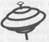

ANNE ALEXANDRE
LA DERNIÈRE NOTE

KTM éditions
© KTM éditions, 2007
15, rue Claude Tillier - 75012 Paris
ISBN 978-2-913066-30-4
À Nathalie, tellement. Toujours.
« La marquise : Voici mon second proverbe :
c’est qu’il faut qu’une porte soit ouverte ou fermée.
Or, voilà trois quarts d’heure que celle-ci,
grâce à vous, n’est ni l’un ni l’autre,
et cette chambre est parfaitement gelée. »
Alfred de Musset
Il faut qu’une porte soit ouverte ou fermée.
1
Midi vingt. Contrairement à son habitude, Antoine est en retard. La chaleur est écrasante, je me recroqueville sous un parasol, assise à la terrasse d’un café, place du marché Saint-Pierre.
La chaise en osier inconfortable me scie les reins, pendant que je plonge la main dans mon sac à la recherche de mes lunettes de soleil. Mes doigts contournent habilement le paquet de cigarettes et le briquet. Bien sûr, je ne les trouve pas et il va falloir que je fasse sans, une fois de plus.
Une serveuse arrive nonchalamment à ma hauteur et je commande un Perrier tranche. Mon estomac gargouille. Antoine, dépêche-toi...
Je tue le temps en examinant sous toutes les coutures la place du marché. Beaucoup de villes ont droit à leur verrue architecturale, Clermont-Ferrand n’échappe pas à la règle. Le bâtiment qui trône depuis trente ans sur ces lieux, un ouvrage aux couleurs criardes jaune et bleu, avec un toit tentaculaire, défigure les immeubles anciens et plus particulièrement le musée Banquet, tapis dans un angle.
Pourquoi les édiles clermontois ont-il décidé de remplacer une halle de structure métallique digne de Baltard par une telle horreur ?
Je décolle mes cheveux de ma nuque en espérant sentir un souffle d’air.
— Bonjour Pauline !
Je sursaute en entendant la voix d’Antoine derrière moi. Un sourire au coin des lèvres, il se penche sous le parasol pour m’embrasser. Il porte une chemise blanche qui achève de m’éblouir.
— Eh bien, qu’est-ce qui me vaut cette grimace ! me glisse-t-il ironiquement à l’oreille.
— Mmmm... tu es en retard, je meurs de faim, j’ai encore perdu mes lunettes et le soleil me tue. Je continue ?
— Ça ira, dit-il en s’asseyant face à moi. Toujours en train de râler... Remercie-moi plutôt de te protéger de la lumière avec mon corps d’athlète !
Je préfère changer de sujet.
— On commande ?
Antoine adresse sans perdre de temps un signe discret à la serveuse. Il referme brusquement le menu qu’il a à peine regardé.
— Je vais prendre la salade gourmande. Et toi ?
— Moi aussi, dis-je après avoir jeté un bref coup d’œil à mon ventre. On va oublier l’entrecôte au bleu. Ce ne sont pas les trois séances de piscine que j’ai faites depuis le début de l’été qui ont fait des miracles.
J’observe Antoine. Ses cheveux bruns sont humides, l’odeur de son after-shave est encore puissante, je crois deviner la raison de son retard.
— J’ai du boulot par-dessus la tête, soupire-t-il et ce temps ne me donne pas envie de rester cloîtré. Je ne sais pas comment tu fais ?
Je hausse les épaules.
— Ben... je fais.
Antoine lève un sourcil interrogateur :
— Tu es de mauvais poil ? C’est moi ou quelqu’un d’autre ?
Il se contorsionne afin que la serveuse, qui vient d’arriver à notre table, puisse poser les assiettes sans difficulté et ne peut pas s’empêcher de laisser tramer son regard sur les jambes de la jeune femme.
Je me force à sourire, je suis tout simplement épuisée.
— Comment pourrais-je t’en vouloir après ce que tu as fait pour moi.[1]
Il baisse la tête, l’air gêné et semble soudain très absorbé par sa salade. Quand il relève le menton, ses yeux verts brillent d’un éclat tout particulier.
— Tu m’as redonné le goût des enquêtes avec ton affaire Randoin. Mes romans policiers new-yorkais ne marchent pas trop mal... mais rien ne vaut l’adrénaline des filatures et des recherches. Je dois t’avouer que je songe même fortement à poser ma plaque de détective privé.
— Vraiment ? Tu comptes faire ça à plein temps ?
Il me regarde légèrement surpris.
— Évidemment.
— Ah bon ? dis-je un peu piquée. Tu penses que tu pourras décrocher des affaires palpitantes ? Ici, à Clermont-Ferrand ? Tu n’as pas peur de passer tes journées à suivre des maris infidèles ?
Il prend le temps de finir tranquillement sa bouchée et repose sa fourchette :
— Je ne suis pas aussi pessimiste que toi. De toute façon, tu me connais, les horaires de bureau, c’est pas mon truc... Je te parie que derrière les portes de certains hôtels particuliers clermontois, il doit s’en passer de belles...
Voilà bien Antoine, qui se cache derrière la dérision dès qu’il s’agit de parler de ses projets. Il n’aime guère recevoir des leçons ou des conseils et le tolère de moi. Mais il me renvoie gentiment à mes moutons.
— Tu as des projets pour les vacances ? demande-t-il.
— Avec Laurence, oui. Nous devons en parler ce soir.
Cette perspective me redonne le sourire. Antoine me regarde avec ses yeux d’entremetteur.
— Ah ! s’exclame-t-il, en s’essuyant la bouche et repoussant son assiette. Les affaires marchent bien à ce que je vois ! J’étais sûr que tu arriverais à tes fins et je ne me suis pas trompé !
Je m’abstiens de lui dire que je ne partageais pas son optimisme et que je voyais en lui un rival plutôt qu’un ami.
— Vous partez quand ?
— D’ici une semaine, je vais pouvoir me libérer plus facilement, il y a beaucoup moins d’audiences l’été, comme tu le sais.
À ce moment-là, j’entends la sonnerie stridente de mon téléphone. C’est le substitut du procureur qui me dit en trois mots que je dois assister un jeune mineur pour le meurtre de son père devant le juge d’instruction et qu’il apprécierait que je sois rapidement au Palais de justice. Je lance un regard contrit à Antoine.
Il a deviné :
— La justice pénale n’est jamais en vacances, dis-moi !
— C’est surtout la délinquance...
— Tu es de permanence ?
— Oui, jusqu’à demain matin. Mais nous avons le temps de prendre un café.
Il lève le bras pour demander l’addition et adresse son plus beau sourire à la serveuse lorsqu’elle vient apporter la note.
Je laisse Antoine à ses projets et prend la direction du Palais. Je traverse à grands pas la place Gaillard et cours m’abriter à l’ombre de la rue Sainte-Rose. Si j’avais seulement le temps de faire un peu de shopping, j’irais profiter de la climatisation des grands magasins.
L’ambiance à l’ordre des avocats est feutrée. Je prends ma robe dans le vestiaire et salue les secrétaires de l’ordre. Un petit groupe de trois avocats entoure Evelyne Rivoire qui monopolise l’attention. Son récit semble être intéressant.
Je dresse l’oreille malgré moi. « Le type était beau. » est-elle en train d’expliquer, « Françoise a dû tomber sous le charme, je ne peux pas l’expliquer autrement. » Il s’agit de son associée, Françoise Reicher.
— Il était grand, mince, brun aux yeux noirs, et voulait divorcer. Il est venu, au deuxième rendez-vous accompagné de sa femme, belle aussi, blonde, hôtesse de l’air, je crois. Ils étaient d’accord pour un divorce à amiable. Ils vivaient séparément, avaient refait leur vie chacun de son côté. Ils n’avaient pas d’enfants, pas d’immeuble en commun. Requête conjointe classique et sans complications. Le juge a prononcé le divorce. Et puis... quelques mois plus tard, un coup de téléphone surprenant... Une femme se présentant comme l’épouse s’étonnait d’avoir été divorcée sans le savoir et sans avoir donné son accord ! Panique à bord ! C’est en demandant un extrait de naissance qu’elle a découvert la mention du divorce... Le type avait eu le cran de se présenter avec sa maîtresse et lui avait fait endosser tranquillement le rôle de sa femme pour divorcer... Je ne vous explique pas l’état de Françoise !
Les confrères s’exclament de surprise :
— Quelle a été la suite de l’affaire ? demande l’un d’eux.
Évelyne Rivoire grimace :
— Elle n’est pas vraiment résolue... Comment annuler une procédure de divorce, quand celui-ci est réputé définitif ? Bonne question ! Peut-être faudra-t-il entreprendre une action en révision, pour le statut de la véritable épouse. Pour le mari indélicat et la maîtresse, des poursuites pénales, pour faux et usage de faux, usurpation d’identité sont envisagées, mais ils ne se trouvent plus en France apparemment.
Elle marque une pause puis reprend d’un ton qu’elle veut dégagé :
— J’avoue que je ne demande pas non plus à mes clients qui souhaitent divorcer de me prouver leur identité. Ça va me servir de leçon... La confiance que tu accordes est dangereuse.
Je ris sous cape et je ne dois pas être la seule. J’imagine la tête de Françoise Reicher après le coup de téléphone. Elle, si froide, hautaine, sûre d’elle, toujours prête à donner des leçons aux autres, doit trembler pour la suite de sa carrière...
Justement, on l’interroge sur les conséquences professionnelles de cette péripétie peu banale.
— Aucune, pour l’instant. Le juge et elle étaient de bonne foi. Ils se sont fait berner, tout simplement. La femme divorcée sans le savoir cherche des noises à son ex-mari. Mais ça pourrait changer. En tout cas, Françoise se fait toute petite et attend que la tempête se calme...
Le groupe se sépare. Sandra Schneider m’interpelle :
— Vous demandez toujours les pièces d’identité aux clients pour une procédure de divorce ?
— Non pas vraiment !
— Je pense que nous allons avoir droit à une note du bâtonnier, poursuit-elle, nous recommandant la plus grande prudence... Il faut être tordu pour faire un truc pareil !
Elle s’est assise à côté de moi, pensive.
— Tout de même, quelle parade trouver contre un jugement de divorce définitif ? Je n’en ai aucune idée... et toi, tu ferais quoi ?
— Je ne vois pas.
— Je regarderai, à mes moments perdus...
Je souris. En effet, lorsque l’on a Sandra comme adversaire, il faut s’attendre à ce qu’elle ait le dernier mot.
Je croise le regard de la secrétaire de l’ordre, qui tente désespérément d’attirer mon attention, la main appuyée sur le combiné du téléphone.
— Maître Vogel ? on vous réclame au quatrième étage chez le juge Ribeiro.
Je laisse tomber un soupir et me lève péniblement.
— C’est l’heure et je n’ai pas encore eu le temps de prendre connaissance du dossier !
Elle m’adresse un sourire de compassion. Je sens son regard me suivre tandis que je franchis la porte.
2
Au quatrième étage du Palais, les rayons du soleil me poursuivent. Ils traversent les puits de lumière et se reflètent dans les briques de verre. Il règne une atmosphère étouffante. Il est vrai que l’architecte a tiré le meilleur parti de la luminosité, mais que le ministère de la Justice, maître d’ouvrage, n’a pas, lui, estimé la climatisation indispensable.
Il a été récemment décidé en hauts lieux de pourvoir certaines pièces de climatiseurs. Les bureaux des chefs de juridiction vont être au frais.
Depuis quelques semaines, le démontage des faux plafonds est en cours, et j’évite avec soin de ne pas me prendre les pieds dans le bataillon de câbles qui traînent sur le sol.
Le bureau de la juge d’instruction chargée des mineurs est l’avant-dernier dans le couloir. Je frappe doucement à la porte.
Corinne Ribeiro me dévisage un instant lorsque j’entre dans la pièce et m’adresse un salut amical. Elle est visiblement en train de préparer l’interrogatoire de première comparution.
— Vous n’avez pas encore pris connaissance du dossier ? me demande-t-elle.
Je secoue négativement la tête. Elle soupire et porte son stylo à ses lèvres.
— Essayez de tirer quelque chose du jeune garçon. Ce n’est pas un dossier banal.
Ses yeux noirs ont décelé une interrogation sur mon visage. Elle ajoute :
— Il s’est réfugié dans un mutisme absolu et on ne peut rien lui faire dire.
Elle remet une mèche de ses cheveux couleur corbeau derrière son oreille et me tend la copie du dossier.
— Lisez, je pense que vous comprendrez mieux. Prenez le temps qu’il faut avec lui, même si le substitut est pressé d’en finir.
— Le garçon est à l’étage ?
— Il est dans la salle d’entretien depuis un quart d’heure.
Je referme la porte et pousse, un peu plus loin dans le couloir, celle du secrétariat commun du greffe. Je m’installe devant une table vide.
Le dossier est aussi maigre qu’une vache indienne. J’en extirpe le procès-verbal de synthèse établi par la police de Clermont-Ferrand et commence la lecture.
Le mercredi 4 juillet à 11 h 20, le commissariat central reçoit un appel — une voix masculine, jeune — au cours duquel l’interlocuteur fait état de la mort violente de son père. Une patrouille se déplace pour vérification.
«À l’arrivée sur place, au troisième étage d’un immeuble 27 avenue d’Italie, les policiers découvrent dans le salon de l’appartement le corps d’un homme de corpulence mince, gisant sur le sol et le dos, les bras écartés, la tête ensanglantée. La victime est morte et son corps est froid. La mort semble remonter à plusieurs heures déjà, mais seule l’autopsie pourra déterminer l’heure exacte du décès. Le corps est vêtu et ses vêtements ne sont pas dévastés, aucune autre blessure que celle de la tête n’est apparente. La scène du crime ne présente pas un désordre important, seule une console ronde a été renversée, un vase en verre et une statuette en bois foncé gisent à côté de la table.
Un jeune adolescent est assis à même le sol, à deux mètres du corps, une statuette en bois dans sa main gauche, couverte de sang et d’autres matières non encore identifiées. Il répète : « c’est moi qui l’ait tué », « c’est moi qui l’ai tué ».
La statuette apparaissant comme l’arme ayant servi à frapper la victime est saisie. Un examen rapide des lieux est effectué et un autre corps est découvert dans la chambre principale. Une femme, d’une quarantaine d’années, inconsciente mais encore en vie. Une ambulance est requise pour transporter cette personne aux urgences du C.H.U. Gabriel Montpied.
Plusieurs boîtes de somnifères et d’antidépresseurs sur la table de chevet de la chambre ainsi que dans une petite armoire à pharmacie dans la salle de bains sont saisies. »
L’officier de police judiciaire en charge de cette affaire indique « qu’aucun autre élément pouvant servir l’enquête n ’est relevé sur les lieux.
La victime est identifiée comme étant Jean-Philippe Lachaud, né le 12 octobre 1953 à Lille.
Le garçon s’accusant du meurtre est son fils, Vincent, né le 17 juillet 1985 à Bruxelles (Belgique).
La femme inanimée est l’épouse de la victime, et la mère du mis en cause, Carole Lachaud, née Montalban, le 23 septembre 1955 à Perpignan.
Elle se trouve dans le coma. En l’absence des résultats des premiers examens effectués lors de sa prise en charge par le service hospitalier, il ne peut être affirmé que son état résulte d’une tentative de suicide ou d’une défaillance physique telle qu’un infarctus, rupture d’anévrisme ou autre. »
Vincent Lachaud est interrogé une première fois. Son audition est lapidaire. À la première question de l’agent de police, il répond simplement « je m’appelle Vincent Lachaud et j’ai tué mon père parce que j’étais en colère. »
À la question suivante (« pouvez-vous m’indiquer les circonstances qui ont amené votre acte ? »), le fonctionnaire a noté : « refuse de répondre ».
À la question « dites-moi pourquoi vous étiez en colère ? » il est également noté : « refuse de répondre ».
À la question «qu’est-il arrivé à votre mère ?», la mention « pas de réponse » est inscrite.
L’enquêteur a noté, à la fin de l’audition, qui tient en une dizaine de lignes, « le mis en cause n’a répondu à aucune des questions posées. Il est cependant calme et sans aucune agressivité. Il n’apparaît pas comme étant sous le choc de la tragédie qui s’est produite, mais une prise en charge médicale semble nécessaire. »
Le jeune Vincent a signé sa déposition.
Aucun témoin direct de cette affaire n’est en mesure de témoigner.
Une enquête de voisinage a été diligentée. Un voisin a été auditionné. Il s’appelle Victor Lenoir et vit au deuxième étage de l’immeuble. Il indique aux enquêteurs qu’il a entendu des éclats de voix très violents, la veille, mercredi soir vers 20 heures. La dispute a duré assez longtemps, suffisamment en tout cas pour attirer son attention et repérer l’heure à laquelle elle se produisait. Une porte qui claque a mis fin au vacarme. Plus aucun bruit n’a filtré de l’étage au-dessus, mais M. Lenoir précise qu’il est sorti dîner chez des amis vers 20 h 30 et est rentré tard dans la nuit.
Selon l’entourage, il s’agit là d’une famille sans histoire, jamais de problèmes pour la copropriété, même avec le garçon, qui jouait du piano très souvent, mais respectant toujours le voisinage. Le fils est un virtuose de cet instrument. Le mari travaillait dans une grande entreprise de travaux publics et la femme dans une école, à la bibliothèque ou quelque chose comme ça. Ils étaient toujours aimables et polis. Ce drame est très surprenant, même si depuis plusieurs semaines, des conversations animées, voire des disputes, avaient régulièrement lieu au dernier étage de l’immeuble.
Aucun membre de la famille n’est retrouvé. Il n’y a pas trace d’une tante ou d’un oncle, ni de grands-parents et Vincent est le seul enfant du couple.
L’enquêteur conclut que des indices graves et concordants permettent de qualifier l’infraction d’homicide volontaire.
Un éducateur du service de la protection judiciaire de la jeunesse a établi un rapport d’à peine deux pages. Après un historique de la cellule familiale et une brève chronologie des événements, il conclut que le mutisme de Vincent est probablement lié au drame qui s’est joué chez lui et qu’une expertise psychiatrique paraît indispensable, ainsi qu’un placement en foyer pour permettre la mise en place d’un suivi éducatif efficace, dans la mesure où aucun membre de sa famille ne peut l’assurer.
Je ferme le dossier. En effet, cette histoire est à la fois tragique et singulière. Je quitte la salle pour me rendre dans le local réservé aux entretiens avec l’avocat.
Deux policiers sont en faction devant la porte qui est restée ouverte. Une femme policier est assise, sur le banc, à côté d’un jeune homme de stature moyenne, la tête et le dos appuyés contre le mur, les yeux dans le vague, comme s’il était spectateur de la scène qui était en train de se jouer.
Elle se lève immédiatement en m’apercevant. Son regard fait des allers-retours des poignets du prévenu jusqu’à moi.
— Oui, dis-je pour répondre à sa question muette, ôtez-lui les menottes.
Elle consulte ses deux collègues restés à l’entrée et vigilants. Elle se penche vers Vincent Lachaud, après un signe discret du plus âgé d’entre eux, et lui libère les mains.
Elle s’écarte de lui pour me laisser prendre place. La porte se referme dans mon dos tandis que je fixe un adolescent de 17 ans, maintenant seul devant moi.
Il n’a pas esquissé le moindre geste pour soulager ses poignets, pourtant martyrisés par les menottes. Ses mains fines sont longues et soignées. Le dossier indique qu’il est pianiste.
Sa tête est toujours calée contre le mur. Je ne sais pas s’il a véritablement conscience de ma présence. Ses cheveux blonds, un peu long, lui donne l’air plus jeune que son âge. De même, sa peau est presque imberbe, il est pâle et cette pâleur est accentuée par la couleur blanche de sa chemise.
— Bonjour, dis-je doucement, je m’appelle Pauline Vogel, je suis avocat et je suis ici pour t’assister.
Je suis restée debout face à lui, attendant un signe. Il hoche la tête et me regarde, un peu surpris, de ses yeux noisette. Il semble si frêle que je ne peux l’imaginer frappant sauvagement son père, avec une statuette, même sous le coup de la colère.
— Je peux m’asseoir vers toi ? demandé-je en tentant de m’éclaircir la voix.
Il ne réagit pas vraiment. Un léger signe de tête que je prends pour un assentiment m’invite à m’installer à ses côtés.
Il commence alors à bouger compulsivement les jambes.
Je n’ai pas le droit à l’erreur. Après deux minutes d’intense cogitation, je lâche :
— Vincent, tu es dans une situation délicate et je suis là pour t’aider à t’en sortir au mieux.
II me semble qu’il a imperceptiblement haussé les épaules.
— Tu vas être présenté à un juge d’instruction qui va t’interroger sur les faits que tu as commis... ou plutôt que tu dis avoir commis. Il faut absolument que tu t’expliques sur les circonstances de la dispute avec ton père, que l’on sache pourquoi tu l’as frappé, pourquoi ta mère est dans le coma, Vincent. S’enfermer dans le silence ne sert à rien. Il y a, autour de toi, des personnes capables de t’aider. Vincent, tu m’entends ?
Il consent tout juste à me regarder avec un air étonnamment calme. Je vois bien que j’ai fait chou blanc. Je persiste :
— Tu vas être soumis à un feu de questions. Si tu ne veux pas avoir à répéter cette histoire plusieurs fois, tu dois m’assurer que tu diras ce qui s’est passé, lorsque nous serons devant le juge, tout à l’heure.
Un silence tendu me fait écho. Je guette une réaction. À ma grande surprise, il parle, d’une voix fragile mais déterminée :
— Il n’y a rien à dire, j’ai tué mon père. C’est tout !
Je comprends cette fois que je n’en tirerai rien de plus que le juge.
Avant de quitter la pièce j’ajoute :
— Je vais revenir te chercher lorsque le magistrat sera prêt.
Je sors sans un mot, impuissante à formuler des phrases de réconfort toute prêtes.
Je frappe discrètement à la porte du bureau de Mme Ribeiro, elle est en grande discussion avec la substitut chargée des mineurs. Une substitut d’à peine 30 ans, élancée, aux cheveux blonds très longs, attachés en queue de cheval.
Mon air désemparé met immédiatement Corinne Ribeiro sur la voie. Marjorie Fonlups, la substitut, commence :
— Et bien, ça ne va pas être facile, il ne nous laisse pas beaucoup de choix, ce garçon !
Je m’adresse à la juge.
— Je pense qu’il ne se rend pas vraiment compte de la situation.
— En effet, déclarer les faits plus de dix heures après les avoir commis ! poursuit la parquetière, un rien furieuse. Après ça, aucune chance de sauver son père et ne parlons pas de la mère, qui sait si elle sortira du coma...
Corinne Ribeiro hoche la tête, visiblement embarrassée.
— Pas la moindre trace de remords et pourtant il est censé être sensible ce pianiste ! Un virtuose habitué des concerts. Vous trouvez que ça cadre vous ?
Marjorie Fonlups s’énerve :
— Écoutez, des gens qui n’avaient pas la tête de l’emploi, on en a vu ! Et beaucoup ! Ce sont même les plus difficiles à confondre. Là, pour le coup, il a avoué, ça va nous faciliter la tâche.
Je m’inquiète de la suite des événements :
— La détention est requise ?
— Oui, répond la juge, presque à regret, on ne peut pas vraiment faire autrement.
Je soupire. On peut faire autrement, s’il se décide à parler. Mais ce n’est pas gagné.
— Vous avez qualifié en homicide volontaire ? Pourquoi ne pas avoir retenu coups et blessures volontaires ayant entraîné la mort sans intention de la donner ?
Je sens que ce débat n’est pas à l’ordre du jour. Le ton et la réponse de la substitut sont sans appel.
— Mais maître, il a avoué un meurtre. En l’état de ses déclarations et des éléments de l’enquête, il s’agit d’un homicide volontaire.
Un ange passe.
— Je reviens tout à l’heure, lâche-t-elle avant de disparaître rapidement dans le couloir.
L’escorte attend devant le bureau, encadrant un Vincent Lachaud pâle, perdu derrière ses mèches blondes.
— Bien allons-y, annonce la juge en désignant des chaises aux policiers.
Vincent Lachaud est installé au milieu de la pièce, je m’assieds à côté de lui.
La juge commence l’interrogatoire de première comparution par la lecture de l’état civil du garçon et la prévention retenue contre lui ; elle lui demande s’il souhaite être interrogé maintenant sur les faits. Il répond une fois de plus : «j’ai tué mon père, j’étais en colère. C’est tout. »
— Vous ne direz donc rien de plus ? s’enquiert le magistrat avec une compassion feinte.
Il répond non d’un signe de tête.
Corinne Ribeiro soupire, je croise son regard ennuyé. Elle dicte à sa greffière et continue :
— Je procéderai à un nouvel interrogatoire dans quelques jours. Dans l’intervalle, il faut statuer sur sa mise en détention ou non. Maître Vogel, je pense que vous allez rester son avocat ?
Je réponds par l’affirmative
— Donc, je vous annonce que je vais ordonner une expertise psychiatrique et une expertise psychologique de votre client. Monsieur Vincent Lachaud, je vous mets en examen pour le meurtre de votre père Jean-Philippe Lachaud. Nous allons procéder au débat contradictoire.
Un peu plus tard, je me retrouve avec, en poche, un permis de communiquer pour le quartier mineur de la maison d’arrêt de Riom.
3
Je suis retournée au cabinet pour les rendez-vous de tin de journée, mais je n’arrive pas à me concentrer.
Ce Vincent Lachaud a une tête d’ange, la tête du gentil héros prêt à sauver la terre entière. Lorsqu’il est reparti encadré de l’escorte, il m’a jeté un regard que je n’ai pas su interpréter.
En feuilletant machinalement mon agenda, je me dis que c’était un mélange de résignation et de fatalité. « Ce n’est pas grave, ça devait arriver, nous n’y pouvons rien, ni vous, ni moi. »
Je chasse son image de ma tête. Ranger son histoire dans un tiroir pour pouvoir m’investir dans celles qui m’attendent est la seule chose que je puisse faire à présent.
Aïcha Vanderhagen est ma première cliente. Elle est petite, corpulente, la gouaille sympathique. Son fort accent de Marseille me met tout de suite à l’aise.
Mme Vanderhagen est de nationalité hollandaise, comme pouvait le laisser entendre son patronyme, et exerce la profession de prostituée.
Mme Aïcha, comme l’appelle ses clients, m’expose, volubile, son problème. À son âge, 54 ans, la vie n’est pas facile. Le métier n’est plus ce qu’il était, ah ça non — me voilà dans un film de Pagnol, sur la Cannebière, adossée contre mon fauteuil, une main sous le menton, je prends des nouvelles du plus vieux métier du monde —, les temps sont durs, heureusement qu’elle a « ses habitués », charmants et pas compliqués, parce que les clients de nos jours, sont devenus exigeants et n’hésitent pas à se montrer pervers. Sa petite activité marche pas mal, elle a une chambre, dont elle est propriétaire, en ville, rue Lamartine, et passe sa vie entre Marseille et Clermont-Ferrand.
Je me redresse :
— Si vous m’exposiez votre problème, madame Vanderhagen ?
Elle me regarde en souriant, un brin gênée, tirant sur le col de son chemisier à fleurs colorées.
— Oh, excusez-moi, maître, j’ai tendance à parler trop, vous savez. On ne change pas les gens du Sud !
J’ai appuyé mes deux coudes sur le bureau. Je lui rends son sourire.
— Voilà, madame Vogel. Je suis venue vous voir parce qu’on m’a dit que vous étiez combative et que vous n’aviez pas de préjugés.
Je la remercie intérieurement pour le compliment et je bénis ma secrétaire Christine de n’avoir donné que deux rendez-vous ce soir, parce qu’avec un tel bagout, on sera encore là pour le dîner.
Elle reprend, d’une voix plus sourde.
— J’ai une affaire ancienne qui me rattrape. Un souteneur de ma jeune époque. Oui, je dois vous dire, je suis indépendante depuis au moins vingt ans. Pas de type pour me commander, me tabasser et prendre mon pognon au passage, ah ça non ! Mais quand j’avais 20 ans et que j’ai commencé dans le métier, à Marseille, j’étais folle d’un gars qui est devenu mon protecteur. En fait, c’est lui qui m’a un peu poussée à faire le trottoir. Bref, quand j’ai compris que je ne l’intéressais que pour le fric que je lui rapportais, on est bête hein, quand on est jeune et amoureuse, quand j’y pense encore aujourd’hui, on est vraiment nouille, nous les femmes, on se laisse embobiner d’un rien. Une belle gueule, de belles paroles, de belles promesses, et on est prises dans l’engrenage, vous savez ce que c’est.
Elle n’a pas l’air trop marquée par les épreuves, exceptée une mince balafre qui fend sa joue gauche, du dessous de l’œil jusqu’au menton. Elle repart de nouveau dans des digressions.
— C’était le bon temps quand même, j’étais jeune et belle ! Maintenant je suis toute décrépite, j’ai mal partout, faut voir pour monter les escaliers jusqu’au gourbi. Deux étages, pas de rampe pour s’aider. Ah, je vous jure, c’est pas tous les jours facile ! À Marseille, je roulais dans des cabriolets, j’avais des vêtements de luxe, il me bichonnait ce salaud (elle soupire), c’est sûr. Il pouvait bien, c’était avec mon argent qu’il m’offrait tout ça.
Son visage se ferme, elle pointe son index sur sa cicatrice.
— C’est un souvenir de lui, ça...
Elle soupire profondément. Je crois que je vais enfin savoir pourquoi elle est là.
— Attention ! ce n’est pas lui qui me l’a faite, mais le résultat est le même. Il était en cheville avec la mafia marseillaise, vous pouvez le deviner. Seulement il n’avait pas carrure pour le gros business. Frimeur, flambeur, mais pas assez méchant dans le fond. Il aurait dû se cantonner à son petit commerce. On était trois filles à travailler pour lui, ça lui faisait un bon petit matelas. Bref, il a voulu faire le coup de la bijouterie Lafaye. Des diamants. Mon Pierrot, il s’appelait Pierre, le voilà acoquiné avec deux lascars pas très nets, et un flic, le cerveau de la bande, un type de la brigade des stups.
Ma grimace de surprise doit être éloquente car elle s’interrompt un instant et reprend :
— Ah, faut pas croire, madame Vogel, y’en a des ripoux à Marseille, du moins à l’époque y en avait !
Elle se tortille sur son siège et regarde une seconde dans le vide.
— Ils ont donc préparé le casse, et le jour dit, voilà qu’ils se sont fait prendre. Ils étaient attendus par les képis. Deux ont pu s’échapper avec le butin, Pierrot s’est fait descendre, et le troisième a été encabané pour quinze ans. Ça m’a fichu un coup toute cette histoire. J’étais bien décidée à quitter Marseille, mais quelques mois après le procès, le type condamné a demandé à me voir. Ça a été tout un micmac, Georges, le type s’appelait Georges, voulait absolument me voir.
Elle soupire de nouveau.
— Et c’est là que les emmerdes ont commencé...
Je regarde discrètement l’heure. Son histoire est intéressante, mais je ne tiens pas à faire attendre Laurence.
— J’ai pu voir Georges, reprend-elle, et c’est là qu’il me dit qu’un flic de la brigade des stups était avec eux, qu’il a organisé le hold-up, et qu’il s’est barré avec les bijoux... J’ai demandé pourquoi il voulait me voir, moi, pourquoi il n’avait pas dénoncé ses complices. J’ai pris peur, vous voyez. Il m’a raconté que sa famille était menacée, qu’il ne pouvait pas le faire. J’ai redemandé pourquoi il me disait ça à moi, pourquoi maintenant. Il m’a répondu, que celui qui s’en était sorti avec le flic avait été retrouvé mort. Il l’avait appris d’un type en cellule. Alors il avait peur que son tour n’arrive et voulait que ça se sache, au cas où. Alors, moi, bien sûr, comme une couillonne, j’ai sorti une lettre du centre de détention, cachée dans mon soutien-gorge. Les gardiens risquaient pas de chercher là ! dit-elle, en agrippant familièrement sa poitrine généreuse, des deux mains.
Je souris un tantinet.
— Me voilà donc avec cette lettre, une confession de Georges, qui dénonce le flic pourri. Quelques semaines après, plus de Georges ! Terminé ! Zigouillé dans sa cellule. Après on m’est tombé dessus en bas de mon immeuble et on m’a laissée pour morte sur le trottoir. Je peux vous dire que j’ai vite compris le message et que j’ai disparu de la circulation.
Elle se redresse soudain.
— Ce que je veux, c’est qu’on me foute la paix ! J’ai fait de mal à personne, je m’en tamponne de ce flic, mais lui apparemment, ne m’a pas oubliée. Je ne sais pas comment il a pu entendre parler de moi, mais j’ai reçu une lettre de menace, à mon studio.
Elle extirpe de son sac à main une feuille épaisse pliée en deux et me la tend.
— Lisez-ça et dites-moi ce que vous en pensez.
La lettre a été tapée sur un ordinateur avec une taille de police importante et en caractère gras.
« Tu en sais trop on ne t’a pas oubliée, et tu as quelque chose qui nous revient. »
Je ne laisse rien paraître bien que ce message soit plutôt inquiétant. Je n’aime pas ce genre de dossier. Je demande prudemment :
— Quand avez-vous reçu cette lettre ?
— Il y a deux jours à peine. J’ai failli m’évanouir de trouille. Ils peuvent me descendre du jour au lendemain.
— Non, je ne pense pas, vous avez quelque chose qu’ils veulent récupérer. Ils ne feront rien tant que vous ne leur aurez pas remis la lettre de Georges.
Sa voix monte dans les aigus :
— Je leur donne tout de suite, moi !
— C’est exactement ce qu’il ne faut pas faire, madame Vanderhagen. Ce bout de papier est votre seule arme. Vous détenez un témoignage capital. Vous-même pouvez témoigner. Deux accusateurs, ça fait beaucoup et ça peut parfois conduire à une arrestation.
— Mais, c’est du vieux cette histoire, je n’ai rien à voir là-dedans !
— Bon, dis-je, pas de panique ! Le document est-il en sûreté ?
Elle fait oui de la tête.
— Très bien, alors il faut attaquer et saisir le procureur de la République immédiatement.
— Non ! crie-t-elle en sursautant. Non ! Je ne veux pas ! ils me retrouveront et ils me tueront.
— Dites-moi où se trouve ce document, comme ça nous serons deux à connaître son emplacement. Si vous aviez un problème, je pourrais saisir la justice.
Elle baisse la tête et dit à voix basse.
— Je l’ai mis dans un god, dans mon studio...
— Où ça ?
Je me suis exclamée un peu vivement. En fait j’ai parfaitement compris et je sens le rouge me monter aux joues.
— Dans un godemiché sur l’étagère au-dessus du lit. Mais je ne l’utilise pas. Attention !
Je rejette mes cheveux en arrière pour me donner un peu de contenance.
— Madame Vanderhagen, je pense qu’on ne peut pas faire autrement. S’ils récupèrent le document, vous resterez un témoin gênant. Pourquoi ne pas essayer d’obtenir son arrestation ? Il était sans doute intouchable à l’époque, mais aujourd’hui, ce n’est peut-être plus la même histoire.
Elle réfléchit longuement. Elle tire une enveloppe de son sac et sort une liasse de billets de 50 €.
— Écoutez, je vais vous payer madame Vogel. Voilà un acompte.
Elle me tend dix billets.
— J’ai travaillé hier toute la journée et je vais travailler encore. Vous allez me sortir de là hein ?
Je prends machinalement l’argent. Me voilà proxénète, malgré moi. Forcément, j’hésite.
— Bon. Je vais m’entretenir avec le procureur et je vous contacte rapidement. Où puis-je vous joindre ?
Elle me donne un numéro de portable.
— Je vais chercher le moyen de vous sortir de là. Il faut que vous fassiez très attention à vous, d’accord ?
Elle me sourit gentiment, se lève et me tend la main.
— Je savais bien que je pouvais compter sur vous.
Dès qu’elle sort du bureau, j’éteins l’ordinateur et je me précipite dans l’escalier. Je décide de me rendre chez Laurence à pieds. Je regarde partout autour de moi. Cette histoire m’a fait un peu froid dans le dos.
Le sourire qu’a Laurence, quand elle ouvre sa porte, me rassure enfin.
— Tu as l’air bizarre, tu es sûre que ça va ? demande-t-elle.
— Oui. Je crois, j’ai eu une journée plutôt particulière. Je boirais bien quelque chose, quelque chose de fort si possible.
Nous passons au salon et je m’affale dans le canapé. Je n’ai envie de rien sauf de la prendre dans mes bras. Je suis tellement concentrée sur mes problèmes que je mets un moment à me rendre compte que Laurence a procédé à quelques changements dans l’appartement. Le canapé au tissu sable, dans lequel je suis vautrée, est nouveau, profond et ferme. Deux fauteuils sont assortis, assez massifs avec des accoudoirs pleins et des pieds en bois en forme de cube.
Je lève la tête vers Laurence qui revient avec un verre de vin blanc dans chaque main.
— Ça te va ? je n’ai rien de plus fort, dit-t-elle en les posant sur la table basse, que je découvre aussi. Elle s’assoit dans un des fauteuils, face à moi.
La table est un rectangle en bois foncé, du wengé, peut-être. Elle est posée sur un grand tapis en jonc de mer.
— Mais dis-moi, tu as viré les vieux meubles de famille ! C’est joli, mais j’avais une petite tendresse pour le canapé vert sapin.
Laurence hausse les épaules et soupire.
— Tu sais, depuis mon divorce, je remplace ma vie d’avant par ce qui sera ma vie maintenant.
— Intéressant. Ce sera pareil pour tout ?
Je crois qu’elle rougit.
— Alors, raconte-moi tes soucis ! Elle change de sujet adroitement.
Et je les lui raconte. Surtout ceux de Vincent Lachaud, auteur, à première vue, d’un parricide. Étonnamment, Laurence a la même réaction que sa collègue Corinne Ribeiro.
— Un pianiste virtuose qui massacre son père, ça ne colle pas. Ou alors, il a une furieuse raison de lui en vouloir
— C’est peut-être ça, une furieuse raison, sauf que la mère est hors d’état de nous parler, et lui ne veut rien dire.
— L’affaire devrait être bouclée assez vite. Pourquoi tu te tracasses comme ça ?
— Je suis comme toi. C’est trop gros pour être vrai.
— Corinne ne fera rien à la va-vite, j’en suis sûre. Elle n’aime pas les enquêtes mal ficelées. Si quelque chose cloche, elle s’en rendra vite compte, ne t’inquiète pas.
— Tu sais, ce gamin m’a fait pitié et je n’aime pas ça, ce genre de compassion qui m’envoie droit dans le mur ou devant un verre.
Laurence se penche en avant, pour être plus près de moi.
— Alors on va passer à un sujet moins stressant. Nos vacances. Tu as une envie particulière ?
— J’aime beaucoup les îles, les îles du Sud. Je verrais bien Malte ou Corfou. Qu’en penses-tu ?
Laurence est songeuse. Elle hoche la tête.
— Tu sais, dit-elle, quand j’étais dans le Nord, je ne supportais pas la chaleur. Les vacances dans le Sud, c’était un calvaire. J’étouffais, ça ne me plaisait pas du tout. Mais je dois dire que depuis que je suis ici, j’ai passé dix jours sur la côte d’Azur, l’année dernière. J’ai adoré le soleil, la chaleur, la végétation, les odeurs...
— Ça ne m’étonne pas, ici, l’air est bien plus sec qu’au nord de la Loire, et il fait chaud d’avril à octobre. Ton corps s’est habitué.
— C’est possible. En tout cas, ton idée me plaît bien. Il paraît que Malte est très jolie aussi.
— Il va falloir trouver un vol rapidement, on s’y prend un peu tard.
Laurence se lève.
— Je vais m’occuper des réservations, mais pour l’instant, viens avec moi dans la cuisine. J’ai préparé une salade de pâtes aux poivrons.
Je la suis docilement. Ici aussi, je remarque des changements. Exit la table bistrot et les chaises. Un plateau de verre épais, ovale, sur des pieds en fer forgé noirs et des chaises avec des assises en cuir noir les ont remplacées.
Nous dînons sagement en devisant sur les vacances. Curieusement je n’ai pas d’appréhension, même si nous ne nous touchons pas, nous ne nous embrassons pas. C’est comme si la suite était connue de nous seules, sans surprise. Une partie déjà jouée, en somme.
Je décide de partir d’assez bonne heure, bien résolue à me conduire en gentlewoman. Sur le pas de la porte, je tends maladroitement ma joue, mais Laurence m’enlace fermement. Mes yeux ne voient que ses yeux, sa bouche est tout près de la mienne et c’est elle qui prend l’initiative du baiser.
« Ça valait la peine d’attendre », se dit-on parfois. Elle embrasse remarquablement bien, tendre et ferme, langoureuse et sensuelle, elle maîtrise admirablement le langage de l’amour. Sa bouche est délicieusement douce. Je sens le désir me serrer le ventre. Nous sommes à l’unisson, complémentaires et affamées.
J’ai l’impression que la scène dure des heures. Mes mains s’agrippent à sa taille pour résister à la tentation de glisser sur son corps. Je me sens fiévreuse.
Je recule finalement. Nous nous regardons haletantes.
Elle a le feu aux joues, et se tapit dans l’encadrement de la porte.
— À demain, murmure-t-elle.
Je reprends mon souffle et lui souris. J’acquiesce de la tête et tourne les talons, désireuse comme jamais, tendue comme une arbalète.
Ça augure de belles nuits, me dis-je, pour me consoler de ma frustration.
Ça m’apprendra à me conduire en gentlewoman.
4
La juge Corinne Ribeiro a ordonné une perquisition des lieux du crime. Vincent a donné son autorisation par écrit, comme l’exige la loi. À défaut d’obtenir des explications, elle espère trouver des documents.
Les analyses médicales indiquent que Mme Lachaud a tenté de se suicider par absorption de barbituriques. Le médecin a aussi précisé qu’elle est dans un coma de stade un, et que la possibilité de communication avec le malade est réduite, qu’elle n’est donc pas en mesure de répondre à des questions. Cependant, ce coma n’est pas encore irréversible.
Nous nous retrouvons devant un immeuble, quelques policiers, la juge, Mme Robin sa greffière et moi.
C’est sans conteste un bâtiment intéressant, pour moi qui aime tant arpenter les rues de Clermont, le nez en l’air, à la recherche d’architectures singulières.
Il est à l’angle de l’avenue Charras et de l’avenue d’Italie et présente sur ses deux côtés une façade de cinq niveaux. En réalité, il n’y a que trois véritables étages, un rez-de-chaussée surélevé, deux niveaux et des combles. Les deux murs enserrant une tour couverte d’un toit pointu imprimant à l’ensemble un style étonnant. Le tout est magnifiquement ouvragé, alternant des matériaux et textures différents : pierre de Volvic, incontournable dans la ville, pour les meneaux des fenêtres et des terres cuites formant les allèges. Les oppositions sont encore plus marquées avec l’alternance d’arkose, de pierres sombres et de briques rouges, vertes et jaunes.
Dommage que la pollution ait entaché l’éclat des couleurs.
— La façade aurait besoin d’être ravalée, dit la juge d’instruction, mettant fin à ma contemplation.
— C’est au dernier étage, indique l’officier de police, en ouvrant la grille d’accès à l’entrée.
Nous pénétrons en file indienne dans la bâtisse et nous nous entassons dans le hall étroit, en évitant les trois boîtes aux lettres. Les scellés qui bloquent la porte en bois massif, sont retirés. Nous entrons dans l’appartement, et c’est un vaste séjour qui s’offre à nous. Les policiers se dispersent sans bruit dans la pièce et commencent à fouiller.
— Comment est réparti cet appartement ? demande Corinne Ribeiro.
L’officier de police, un homme trapu avec une petite moustache, déplie un plan de taille réduite et explique :
— C’est un duplex avec séjour-salon, devant nous. À droite, un long couloir avec en enfilade, une cuisine et deux pièces, une chambre et un bureau. De l’autre côté, même topo : un long couloir, une pièce qui a l’air d’être un bureau, une salle de bains avec WC et une chambre.
— Et là ? demande la juge, en désignant un escalier en bois au fond de la pièce.
— C’est un accès aux combles. Il y a une bibliothèque et des tas de partitions et livres.
— Fouillez en priorité les chambres et bureaux. Je vais voir au-dessus, dit la juge.
Je m’approche de la fenêtre du séjour et me rends compte que nous sommes exactement sous l’arc brisé que j’admirais en bas, quelques minutes plus tôt. La lumière entre dans la pièce par une petite fenêtre et deux fenêtres latérales sur les côtés de la tour.
Au fond, légèrement surélevé, trône un piano.
— Un quart de queue Steinway, dit un policier avec un sifflement d’admiration, excusez du peu !
Je traverse le séjour et m’approche de l’instrument. Il est magnifique. Je n’ai pas de mal à imaginer Vincent, assis sur ce tabouret recouvert de velours, ses mains virevoltant avec légèreté sur le clavier. Il est sans doute plus à sa place ici que sur le lit en fer d’une cellule.
Je me suis approchée inconsciemment de Corinne Ribeiro qui se penche sur une statue d’un homme assis, genoux relevés.
— De l’art précolombien, dit-elle en connaisseuse. Je ne sais pas qui est le collectionneur, mais il devait avoir les moyens. Elle interpelle un policier en tenue :
— Faites des photos de tous les objets et joignez-les au dossier.
— C’est avec une de ces statuettes que Jean-Philippe Lachaud a été tué ? demandé-je.
Corinne Ribeiro tend le bras et désigne une sorte d’urne à l’effigie d’un dieu.
— Elle ressemble à celle-là, sauf qu’elle est en jade, l’arme du crime, en bois.
J’admire son érudition.
— Si toutes ces œuvres ne sont pas des copies, il faudra qu’on m’explique comment il se les est procurées et comment il a pu les payer !
Me voyant perplexe elle ajoute :
— Ce sont des œuvres rares et je sais qu’il existe un gros trafic pour les obtenir. La Suisse est d’ailleurs une vraie plaque tournante.
Elle s’interrompt, semble se raviser.
— Enfin, ici à Clermont-Ferrand, il ne faut peut-être pas s’emballer. Je vais quand même procéder à des vérifications. Je monte à l’étage, vous me suivez ?
L’escalier est étroit, et ne permet le passage que d’une personne à la fois. La pièce est éclairée par une lucarne dans le toit et trois minuscules fenêtres. L’odeur de poussière est tenace. Au centre, il y a un bureau couvert de partitions. À droite des étagères toute simples en bois blond, remplies de livres. À gauche un autre rayonnage rassemblant une discographie impressionnante : je m’approche pour déchiffrer les jaquettes : Chopin, Schubert, des interprètes talentueux dont bien sûr Horowitz. Le concert de Cologne de Keith Jarrett est coincé dans une pile, ce qui ne manque pas de me surprendre.
— Est-il pianiste professionnel, je veux dire est-ce son métier ?
La juge secoue la tête en pinçant les lèvres.
— Je n’en ai aucune idée et je ne suis pas familière du milieu musical. On ne peut pas trop le deviner vu que l’artiste n’a pas été très bavard.
Corinne Ribeiro scrute la pièce, comme si quelque chose allait en sortir. Elle soupire :
— C’est la première fois que je mets en examen un prévenu qui écoute Horowitz, ça ne cadre pas avec la violence des faits.
Je ne réagis pas, je m’imprègne du jardin secret de Vincent, cette pièce où il est sans doute totalement lui-même.
— Un policier est monté et, sans prêter attention à nous, se met à fouiller à travers les papiers disséminés sur le bureau. Il tend des documents à la juge. Elle y jette un bref coup d’œil et se tourne vers moi.
— Regardez, maître Vogel, il a déjà fait au moins un concert, peut-être plusieurs. Ici, c’est à La Rochelle. Une réunion de jeunes talents, semble-t-il.
Je sens mon cœur se serrer. Peut-on imaginer qu’un jeune homme promis à une grande destinée ruine en un instant des années d’effort, des heures de pratique et de répétition ?
La juge plisse le front, perplexe.
— J’ai vraiment du mal à le croire coupable d’une chose pareille. En dépit de ce que peut en penser le procureur...
Elle reprend vite, avec un geste large de la main :
— Quoi qu’il en soit, l’examen des empreintes sur l’arme du crime nous en dira peut-être un peu plus.
Le policier rassemble quelques papiers sur le bureau et lance un regard interrogateur au magistrat instructeur. Corinne Ribeiro se concentre sur la lecture de ces documents.
— Rien d’intéressant, à première vue. Le concert à La Rochelle, une lettre de fan... comme c’est dommage. On embarque tout ça quand même. J’espère qu’ils auront plus de résultats à l’étage en dessous.
Le séjour s’est assombri, mais le piano brille de tous ses feux. L’officier s’approche doucement de nous.
— On a trouvé du matériel informatique dans le bureau, côté sud. Il semble appartenir à la victime. C’est un ordinateur Packard Bell. Il y a aussi un portable, rangé dans la bibliothèque. Nous avons pu y accéder, mais pas l’autre. Il a un code d’accès sécurisé. Il faudra l’équipe spécialisée pour le faire parler.
— Très bien, dit Corinne Ribeiro, embarquez tous le matériel. Vous avez trouvé quelque chose dans le bureau ?
— Oui. Nous avons pris des lettres et un agenda.
— Pas de relevés de comptes, de documents bancaires ou financiers ?
— Pas encore.
— Alors cherchez par là. On ne sait jamais.
L’appartement ressemble maintenant à une ruche.
Je fixe malgré moi le piano, avant de sillonner les pièces en quête d’indices, comme si connaître le lieu pouvait m’éclairer davantage sur mon jeune client.
Mes pas me conduisent vers une chambre qui semble être celle des parents. Un policier inventorie le contenu du tiroir de la table de chevet. Je ne m’attarde pas. Plus loin, j’aperçois une pièce aménagée comme un salon de détente. Il y a un canapé contre le mur, une télévision sur une petite table basse et une bibliothèque étroite, remplie de boîtes cartonnées.
Je traverse la cuisine puis reviens au salon. C’est seulement là que je remarque la tache de sang.
Je note en passant que toutes les statues précolombiennes ne sont pas saisies.
Corinne Ribeiro est dans le séjour, entourée de quatre policiers. Elle agite les mains, impérieuse et décidée, regardant dans ma direction, elle lance :
— Je crois qu’on a fait le tour ! On a pris ce qui était nécessaire. Avez-vous vu quelque chose qui nous aurait échappé, maître Vogel ?
Je suis surprise qu’elle me demande mon avis et je réponds par la négative.
— Très bien, dit-elle, on plie bagages !
La petite procession repart dans le sens inverse. Sur le trottoir, je regarde les voitures de police s’éloigner et celle du magistrat instructeur, conduite par la greffière. Je reste seule devant l’immeuble. Il m’a semblé voir un visage à moitié caché derrière le rideau du deuxième étage. Peut-être le voisin du dessous nous a-t-il entendu faire les cent pas dans l’appartement.
J’ai l’impression, soudain, d’entendre un chapelet de notes aigrelettes s’échappant de la fenêtre, sous le toit. Je pense à Fenêtre sur Cour.
Je rallume mon téléphone portable. Pas de message. Je remonte l’avenue Charras en direction de la place Delille. De là, je m’attaque à la rue du Port et arrivée à la cathédrale, je traverse la place de la Victoire.
Je décide alors de filer jusqu’au marché Saint-Pierre avec l’idée d’acheter de quoi faire un saumon aux lentilles et une salade de fruits frais. Mon gros chat Léo va se régaler avec une petite tranche de thon.
Les étalages sont déjà clairsemés, je m’empresse de choisir des nectarines et des abricots bien mûrs. Je passerais mes journées ici, le nez au-dessus des cagettes odorantes.
La commerçante me rend aimablement la monnaie, tandis que j’aperçois au loin l’une de mes meilleures amies, Valérie Hermann.
Je crie dans sa direction. Elle n’a pas l’air ravie de me voir et m’expédie littéralement. Elle est très pressée et même en retard déjà. Je n’ai pas le temps de demander des nouvelles de Marie-Pierre, sa compagne depuis plusieurs années.
Je ne comprends pas très bien son attitude distante et désagréable. Nous sommes amies depuis si longtemps, depuis sa mutation en Auvergne comme professeur d’histoire dans un lycée de l’agglomération clermontoise. L’incompréhension me cloue littéralement sur place.
Elle s’éloigne assez rapidement et sort par une porte latérale du marché accompagnée d’une jeune femme blonde qui l’attendait patiemment au bout de l’allée.
Je reviens lentement de ma surprise et attrape mon portable. Toujours pas de message. Pourquoi Laurence ne m’appelle-t-elle jamais ?
Tant pis, je regarderai toute seule, le DVD de Room at the Top en me consolant avec le sourire de Simone Signoret.
5
La salle d’audience du tribunal correctionnel frémit d’impatience.
— Quelle idée vous est passée par la tête, monsieur Filou ? demande le président.
— Filon. Corrige mon client.
— Oui, bon, monsieur Filon.
Le prévenu se balance d’un pied sur l’autre, en s’agrippant à la barre comme un marin en pleine tempête. Il baisse la tête, l’air penaud.
— Alors ? S’impatiente le magistrat.
— J’en avais marre de voir les pères Noël accrochés à leur balcon.
Le juge secoue la tête et fronce les sourcils.
— Mais, enfin, ce ne sont que des objets décoratifs ! Des poupées de chiffon ou de plastique que chacun est libre d’attacher où il veut. Ce ne sont pas des êtres humains ou des animaux tout de même !
— Vous trouvez ça normal, de voir un père Noël pendant des mois en équilibre sur le rebord d’une fenêtre ? Ça peut donner de drôles d’idées vous savez !
Le magistrat joint les deux mains sous son menton.
— Vous vous croyez investi d’une mission, monsieur Filon ?
— Parfaitement, monsieur le Président, c’est ça. Parfaitement.
Le prévenu a redressé les épaules et son visage éclate de fierté. Le juge jette dans ma direction un regard inquiet et reste un instant silencieux, avant de replonger dans le dossier.
— Dites-nous, monsieur Filon, cette Société nationale de sauvegarde des pères Noël en détresse que vous avez créée, c’est votre signature, un moyen de vous faire connaître ?
— Comme les voleurs de nains de jardin ? ne peut s’empêcher d’ajouter le procureur de la République.
Un bruissement se fait entendre dans la salle d’audience, des rires étouffés, pour la plupart.
Mon client est décontenancé. Il secoue les épaules, peut-être croit-il qu’on se moque de lui.
— Ben... plutôt comme Arsène Lupin, en fait.
Les rires sont francs et ne sont plus contenus, maintenant dans la salle.
M. Filon ne semble pas s’apercevoir qu’il est la risée du public.
— Hum... dit le magistrat, partagé entre une envie de rire et de se mettre en colère devant tant de temps perdu pour des sornettes. Un peu de calme dans la salle s’il vous plaît. Reprenons. Vous avez conscience qu’en dérobant les pères Noël, non seulement vous causez un préjudice, mais vous mettez aussi votre vie en danger, en escaladant les balcons ? Tout ça pour quoi ? Vous pouvez me le dire ?
M. Filon perd soudain de sa superbe. Il comprend, désolé, qu’on ne voit en lui qu’un justicier inconséquent et ridicule.
— Vous n’essayez pas de couvrir des acolytes ?
— Non. Affirme mon héroïque sauveur de père Noël.
Bien sûr, pensé-je, c’est le type même à ne pas vouloir se faire voler la vedette. Là, pour le coup, c’est réussi. Le juge reprend :
— Avez-vous des questions monsieur le procureur ?
Ce dernier se lève de son fauteuil et du haut de son estrade dévisage gravement le prévenu.
— Qu’aviez-vous l’intention de faire avec les... il jette un œil sur ses notes... vingt-huit pères Noël dérobés ? Un parc d’attraction ? Vous comptiez les relâcher dans la nature ?
M. Filon rougit et baisse à nouveau la tête, en faisant glisser ses mains sur la barre.
— Ben... je sais pas. Je voulais juste les enlever des balcons et des fenêtres.
Le magistrat se tourne vers moi.
— La défense ?
Je dis non d’un signe. Je réserve mes arguments pour la plaidoirie.
À la sortie de la salle, un couple de vieilles personnes, une femme, les cheveux teints en noir, sévèrement maquillée et un homme fluet arborant une casquette à carreaux me font de grands signes bienveillants. Ce sont des habitués, ils vont à l’audience comme on va au cinéma, sauf que là c’est gratuit. Aujourd’hui, ils sont aux anges.
Ils m’interpellent au sujet de l’affaire. Je souris, amusée. J’ai mon fan club au Palais. Ils doivent certainement établir un hit-parade des avocats, des magistrats et raconter en société les affaires intéressantes qu’ils ont la chance de voir se dérouler sous leurs yeux.
— Faites attention à vos pères Noël, dis-je, on ne sait jamais, il a peut-être fait des émules.
Je tourne les talons. Direction le quatrième étage du bâtiment. J’avale les escaliers avec la ferme intention de frapper à la porte de Laurence.
« Entrez » répond une voix inconnue.
Je garde une main sur la poignée. Une petite femme replète, me sourit d’un air engageant.
— Mme Le Vigan n’est pas encore là. Vous voulez l’attendre ?
— Je n’ai pas beaucoup de temps devant moi.
Debout devant une armoire métallique ouverte, elle repose un dossier dans son hamac tout en en tirant un autre.
— Je suis nouvelle, dit-elle comme pour devancer ma question. La nouvelle greffière de Mme Le Vigan. Depuis la semaine dernière seulement.
— Enchantée, dis-je un peu déroutée.
Elle rejette ses cheveux en arrière, d’un large mouvement d’épaule. Une chevelure brune, ondulée et épaisse.
Sa tête m’est d’emblée sympathique. Elle a plein de petites rides autour des yeux et aux coins des lèvres. C’est une bonne nature qui doit rire très souvent. Je commence à être gênée par mon silence :
— Vous direz à Lau... Mme Le Vigan, que Pauline Vogel est passée.
— Ah, laisse-t-elle échapper, avec une voix soudainement plus aiguë, c’est vous maître Vogel.
Qu’est-ce qu’elle veut dire par là ? Ce n’est pas le genre de Laurence de s’étendre sur sa vie privée.
Elle éclate d’un rire franc et communicatif.
— Ne faites-pas cette tête, maître, j’ai entendu parler de vous et je suis heureuse de faire votre connaissance.
Je rougis jusqu’aux oreilles et referme la porte avec soulagement. Je vois le nom d’Isabelle Pélégrini inscrit sous celui de Laurence.
Je file vers le bureau de Corinne Ribeiro. Elle n’est pas là non plus. Décidément. Madeleine Robin, sa greffière lève les yeux de l’écran de son ordinateur à mon arrivée. Elle est l’exact contraire d’Isabelle Pélégrini, de stature moyenne, les cheveux lisses, châtain clair, ramenés en un sage chignon, vêtue d’un tailleur classique.
— J’ai vos copies dans le dossier Lachaud. Vous venez bien pour le dossier Lachaud ?
— Oui, je voudrais vérifier certaines choses dans le dossier.
Elle désigne du menton le bureau de la juge.
— Il est là. Vous pouvez rester ici pour l’examiner. M1™ Ribeiro s’est absentée quelques minutes chez le procureur.
Je la remercie, m’installe sur une chaise inconfortable et commence à feuilleter les pages des auditions.
Corinne Ribeiro ne tarde pas à revenir.
— Ah bonjour maître, lance-t-elle sur un ton énergique. Lachaud, n’est-ce pas ?
Elle s’assoit face à moi, ses yeux ont quelque chose d’important à me dire.
— Nous n’avons pas fini de coter les documents que nous avons saisis au domicile, mais nous avons d’ores et déjà des éléments intéressants.
— Intéressants pour qui ? Vincent a avoué le meurtre non ?
Un air de stupéfaction s’affiche sur le visage de la juge d’instruction. Elle se cale sur le dossier de son large fauteuil.
— Et bien ça alors ! s’exclame-t-elle. C’est le monde à l’envers !
— Ne vous méprenez pas, je ne suis pas plus convaincue que vous de sa culpabilité, mais je m’étonne que vous passiez outre ses aveux.
La magistrate prend son temps pour me répondre.
— Je pense tout simplement que Vincent Lachaud s’accuse à la place de quelqu’un d’autre, à la place de sa mère par exemple. N’oublions pas qu’elle a tenté de se suicider. En outre...
Elle marque une pause, jaugeant l’effet produit et reprend :
— En outre, nous avons trouvé des documents qui pourraient laisser croire que le père avait quelques activités pas très nettes.
— Ah ?
— Oui. Tenez. Jetez un coup d’œil à ces pièces.
Elle me tend des relevés de comptes et commente, tandis que je découvre les documents.
— C’est le compte personnel de Jean-Philippe Lachaud. Il y a aussi un compte joint, mais nous n’avons rien trouvé de suspect. En revanche, il y a ici un certain nombre de virements conséquents. Il est crédité à plusieurs reprises de grosses sommes, au moins deux fois par semestre sur l’année 2001. Entre 25 000 et 50 000 F, à chaque fois. Pour cette année, nous avons trace d’un virement sur un compte localisé à Nice, deux fois 1 600 € et d’un versement de 5 000 £ sur un compte à Jersey.
— À Jersey ?
— Oui. Ça ne me dit rien qui vaille. Notre homme avait des revenus confortables, de l’ordre de 4 200 € par mois, mais ces opérations bancaires ne correspondent à aucun des virements de salaire. Il y a peut-être autre chose qu’une affaire familiale sordide derrière tout ça. On va creuser un peu là. J’ai lancé des commissions rogatoires, dans le sud de la France. Les virements de l’année 2001 proviennent donc de Mexico. Il semble d’ailleurs que Jean-Philippe Lachaud ait travaillé au Mexique. L’expertise menée sur les statues précolombiennes est toujours en cours.
— Et Vincent ? Qu’est-ce que vous en faites ?
Corinne Ribeiro répond :
— J’aimerais qu’il soit plus bavard. Je vais l’entendre de nouveau. En tout cas, je ne le libère pas, si c’est ce que vous attendiez. J’attends le rapport du psychiatre avant de prendre une décision.
Elle se tourne vers sa greffière, qui tape sans relâche sur son ordinateur.
— Vous avez les copies, madame Robin ?
— Elles sont à votre droite.
La juge fait l’inventaire de celles qui me sont destinées.
— Vous avez les documents bancaires, le relevé des e-mails de la victime, quelques messages sont d’ailleurs sibyllins. Si vous avez des idées, n’hésitez pas. Un listing des appels téléphoniques sur le fixe et le portable des deux époux, ainsi qu’une lettre d’admiratrice destinée à Vincent, assez touchante, je dois dire. Ah oui, j’oubliais, J’ai également reçu l’examen des empreintes. On n’a rien pu relever sur cette statue, curieux non ?
Je saisis le paquet et prends congé de la juge.
En passant devant le bureau commun des greffiers, je croise à nouveau Isabelle Pélégrini. Elle me sourit encore une fois. Son parfum est frais et léger. Je la regarde s’éloigner.
Sait-elle déjà quelque chose ?
6
Ce matin, le miroir me renvoie l’image peu flatteuse d’une femme aux traits tirés et au teint pâle. Mes yeux gris plutôt que verts, s’accordent remarquablement bien à la couleur de mes cernes. Voilà à quoi ça me sert de me coucher tôt le vendredi soir. J’attrape dans l’armoire de la salle de bains un de ces cache-misère hors de prix et m’en tartine le visage. Les reflets auburn de mes cheveux me consolent un peu.
Léo tourne entre mes jambes en attendant son câlin matinal. La sonnette retentit dans la maison trop silencieuse depuis la mort de Marie-Hélène et me réveille définitivement. Je cours vers la fenêtre de la chambre, Laurence est là devant la porte d’entrée, un petit sachet en papier à la main.
— Bonjour ! crie-t-elle en regardant dans ma direction, levant la tête. Elle lève le bras et agite le sachet. J’ai apporté les croissants !
Ses cheveux blonds brillent dans la lumière vive du matin. Son sourire me comble de bonheur.
— C’est ouvert, dis-je, le cœur battant la chamade.
Léo dévale les deux étages et l’accueille avant moi.
Nous nous retrouvons devant la porte de la cuisine, face à face, sans trop savoir quoi faire.
Je ne suis pas mécontente que le chat ait filé dans le jardin et me laisse seule avec elle.
Laurence fait un pas vers moi et désigne la cafetière de la tête.
— Un café, je crois que ça me plairait assez.
— Installe-toi dans le salon, j’en ai pour deux minutes.
Laurence est radieuse.
Je compte machinalement mes cuillères à café. Si cette histoire était un tant soit peu normale, j’irais dans le salon, m’assoirais dans le canapé et je l’embrasserais jusqu’à plus soif. Laurence, bien sûr, répondrait à ma fougue matinale. Au lieu de ça...
Et voilà, j’ai mis trop de café dans le filtre.
Le café s’écoule doucement et la cafetière chante curieusement.
— Pauline ?
J’abandonne mes réflexions existentialo-amoureuses.
— Où tu as acheté ce tableau ?
J’arrive dans le salon, avec la cafetière et deux mugs en grès. Elle parle de la toile haïtienne achetée aux Antilles à un peintre en exil. Je le lui dis.
— J’aime beaucoup ses couleurs. C’est doux, c’est naïf. Finalement, tu as des goûts très éclectiques.
Pas tant que ça. J’ai quelques coups de cœur, mais la peinture hollandaise du xvif est, de loin, ma préférée. Je remarque d’ailleurs que je ne fréquente plus beaucoup les musées depuis que je vis seule.
Je m’installe aux côtés de Laurence, sur le canapé. Son tailleur beige lui va décidément à merveille. J’essaie de le lui dire sans y parvenir. Du coup je me venge sur le croissant.
Nous avons dû nous tourner l’une vers l’autre en même temps car nos visages manquent de se heurter.
Ma main s’approche de sa joue. Mes lèvres vont sans détours sur les siennes qui m’accueillent avec ferveur.
J’ai deux mille ans d’attente à rattraper, je ne laisse pas Laurence respirer. Elle s’agrippe à mes épaules, laisse échapper un soupir et se love contre moi. Mes paupières sont baissées, je savoure son parfum léger et fleuri. Mes mains se promènent sur sa nuque, caressant le cou, puis le long de ses hanches, glissent sous le chemisier de soie et remontent jusqu’aux seins. Laurence sursaute légèrement quand je la caresse à travers le soutien-gorge.
Elle me regarde de ses yeux bleu profond. D’un mouvement souple, elle écarte un peu les jambes. Elle plaque vigoureusement mes doigts sur son sexe. J’imprime une pression ferme entre ses cuisses.
Elle gémit et se renverse en arrière. Je suis son mouvement et me penche sur elle, sans cesser de l’embrasser. J’entends son souffle tout près de mon oreille. Je suis complètement électrisée. Elle n’est pas loin de l’extase. Je n’en peux plus, je dégrafe le pantalon et y plonge ma main tremblante. Je ne peux retenir un gémissement de plaisir.
La sonnette retentit.
Nous tressaillons toutes les deux. Laurence resserre instinctivement les cuisses.
La sonnette retentit une deuxième fois.
Ce n’est pas possible !
Nous restons tétanisées, nos corps toujours collés l’un contre l’autre. Je prie pour que cet instant ne s’arrête jamais.
La sonnette retentit encore.
Je pousse un soupir de découragement et me redresse. Le charme est définitivement rompu. Laurence me regarde avec une moue boudeuse.
Je m’approche de la baie vitrée. Antoine attend sagement devant la porte.
— C’est Antoine, dis-je.
J’entends, plus que je ne vois, Laurence rajuster son pantalon et discipliner ses cheveux. Elle se cale au fond du canapé et boit son café, sans rien répondre.
Je vais à la rencontre d’Antoine, plus pour essayer de me calmer que par politesse. Il m’embrasse comme du bon pain.
— Ça va ? demande-t-il, tu as couru ? Tes joues sont un peu rouges... là...
Il effleure ma joue droite de sa main.
— Laurence est là. Monte, j’ai préparé du café !
— J’espère que je ne vous dérange pas ?
Ce n’est pas exactement ce que je dirais, mais... Il me suit dans le salon. Laurence s’est levée à son arrivée. Ils s’embrassent cordialement, sans plus. J’intercepte un regard perçant d’Antoine, cette fois, je crois qu’il a compris.
— Assieds-toi, dis-je pour faire diversion.
Je retourne à la cuisine pour chercher une tasse. Je les retrouve comme je les avais laissés, silencieux. Ils forment un duo plutôt bien assorti, aussi élégants l’un que l’autre.
Je sens que Laurence m’en veut de lui avoir ouvert la porte. Je me lance :
— Alors ? Quelles sont les nouvelles ?
Rien de tel qu’une bonne platitude pour détendre l’atmosphère.
— Rien d’excitant, Pauline. La routine. Par contre, j’ai lu dans le journal qu’un gamin aurait tué son père, ce n’est pas toi qui le défend par hasard ?
Mon regard croise celui de Laurence.
— Oui c’est moi. Par hasard...
Antoine remonte les manches de sa chemise. Quelle coquetterie que de porter des manches longues en été !
— Ah, je ne sais pas pourquoi, mais je le sentais !
Je hausse les sourcils. Laurence est complètement ailleurs. Elle n’a pas touché à son croissant et n’est pas plus expressive qu’une chaise.
— En fait, il n’est pas certain que ce soit lui le coupable.
Antoine s’installe au fond du fauteuil en cuir qu’il affectionne particulièrement.
— Décidément... Tu me racontes ?
Alors je lui raconte dans les grandes lignes. De toute façon, nous n’avons pas encore beaucoup d’éléments, mais je ne manque pas de lui indiquer que la juge d’instruction en charge de cette affaire partage mon sentiment.
— Le gosse s’accuse. Pourquoi tu ne le crois pas coupable ? demande-t-il, avec la rudesse de celui qui s’étonne qu’on ne se plie pas à l’évidence.
Je prends le temps de répondre, sachant qu’il va sûrement démonter ma thèse un peu faiblarde.
— C’est la manière dont il avoue qui cloche. Il dit qu’il a frappé son père et puis plus rien. Il ne veut donner aucun détail sur son geste, ni sur l’arme utilisée.
— En effet... c’est curieux comme comportement.
Il se tourne vers Laurence qui continue de fixer le mur face à elle.
— Et qu’en pense madame la juge ?
— Je ne suis pas en charge de l’affaire, répond-elle d’un ton sec.
J’enchaîne pour couper court à leur échange.
— Personne n’est en mesure d’en dire plus, à l’heure actuelle. Sa mère est dans le coma. Il peut d’ailleurs très bien vouloir la protéger, si c’est elle qui a tué son mari.
— Est-ce qu’il y a d’autres pistes ?
— La juge lance des recherches dans ce sens. Il a travaillé longtemps au Mexique. Et on a trouvé des statues précolombiennes qui pourraient valoir une petite fortune selon elle. Si c’est le cas, reste à savoir comment il a pu les acheter.
Antoine reste un moment silencieux et commence à jouer avec le bracelet de sa montre. Je jette un œil du côté de Laurence qui semble s’impatienter.
— Il faisait quoi au Mexique ? demande-t-il.
— Il travaillait dans une entreprise de travaux publics qui a une antenne en Amérique du Sud.
— Je vois ! Je comprends mieux les inquiétudes de la juge. Ce genre d’entreprises et la mafia locale, ça peut faire un joli mélange de trafics, de pots-de-vin et de corruption.
Je hoche la tête.
— Lachaud était ingénieur et s’occupait surtout des appels d’offre.
— De mieux en mieux ! s’exclame Antoine. Ton gars a peut-être été victime d’un règlement de compte.
Laurence soupire, je dis un peu vivement :
— Mais, dans ce cas, pourquoi Vincent s’accuserait-il d’un meurtre commis par un mafioso ou une vieille connaissance de son père ? Non ! Son attitude ne peut révéler qu’une chose : il protège sa mère.
— Pas sûr ! Il peut très bien n’avoir rien vu de la scène, il trouve son père mort, la tête défoncée, sa mère à moitié morte, il s’imagine que sa mère a tué son père et a tenté de se suicider, il ne veut pas qu’elle paye ce crime pour des raisons que nous ne connaissons pas, et il l’endosse, tout simplement... De toute façon, l’essentiel c’est qu’aucune des pistes possibles ne soit négligées.
Il a un sourire enjôleur.
— Encore une chance que ce ne soit pas Laurence qui instruise ce dossier, n’est-ce pas ?
Il fait pivoter son corps dans sa direction, conscient du silence pesant émanant de ce côté de la pièce.
Elle s’efforce de répondre par un sourire et replonge dans ses pensées. Ses cheveux sont encore un peu emmêlés. Je la revois brûlante tout contre moi.
— Même si tu n’as pas été très bavarde aujourd’hui, tu vas bien mettre un peu le nez dans cette enquête, non ?
— Je ne sais pas. Pauline ne m’a rien demandé.
Je sens comme une pointe de reproche.
— Mais je n’ai rien demandé à personne. Toi tu es tellement curieux que tu es mûr pour visser ta plaque de détective !
Antoine répond d’un ton flegmatique :
— En tout cas, Pauline, tu peux compter sur moi pour t’aider dans cette affaire.
— Nous n’en doutons pas, assène Laurence sur un ton glacial.
Un silence gêné s’installe. Je me demande pourquoi elle réagit aussi vivement. Serait-ce parce qu’Antoine est arrivé au mauvais moment ? Il ne pouvait pas le deviner.
— Dans ce cas... reprend Antoine, en se levant. Je vais vous laisser tranquille.
Laurence se lève à son tour.
— Je m’en vais aussi.
— Ah bon, déjà ? dis-je étonnée.
Elle franchit les quelques mètres qui la séparent du hall. Antoine la rejoint, il m’a embrassée rapidement et crie dans l’escalier :
— Salut les filles !
Je retiens Laurence par le bras.
— Reste... reste s’il te plaît. Je n’aurais pas dû lui ouvrir... mais il n’est pas tard, reste encore un peu...
Elle ajuste ses lunettes de soleil sur son front.
— Non, j’y vais, grimace-t-elle.
Nous arrivons jusqu’à la porte d’entrée, qu’Antoine a laissée entrouverte. Elle sort d’un pas décidé.
— Laurence ?
Elle s’arrête.
— Qu’est-ce que j’ai fait ?
Elle se retourne enfin :
— Rien, Pauline, rien.
7
Quand je déprime, seules Marie-Pierre et Valérie savent comment s’y prendre avec moi, avec le temps, elles me connaissent par cœur. Depuis que nous nous sommes rencontrées dans le cadre d’un festival de cinéma, elles me sont devenues indispensables. Je devrais dire depuis que la solitude m’a fait dérailler ; après la mort de ma compagne, leur sérénité, la solidité de leur couple, m’ont permis de ne pas sombrer définitivement.
Je décide donc de leur rendre visite avant de filer au Palais. Je parcours en voiture les quatre kilomètres qui me séparent de chez elles et lorsque Marie-Pierre Pavin vient m’ouvrir, je vois immédiatement que quelque chose ne tourne pas rond. Est-ce le décès de l’un de ses patients en fin de vie auquel elle s’était attachée qui la met dans cet état ?
Elle m’embrasse, avec un brin de réserve, m’invite à franchir le seuil de la porte et me dit :
— Valérie est allée chez sa grand-mère, elle n’est pas là.
Je ne sais pas pourquoi, mais à ce moment-là surgit l’image d’une Valérie expéditive et distante au marché Saint Pierre.
À l’intérieur de la maison, dans le hall et dans le salon, l’air est frais, agréable. Comme à son habitude, Marie-Pierre a disposé des bouquets de fleurs çà et là dans la pièce, ce qui, ajouté à la décoration provençale, donne au lieu une atmosphère de vacances.
Je raconte mes malheurs entre deux gorgées de jus de pamplemousse. Marie-Pierre m’écoute attentivement, mais je sens dans son regard qu’elle n’est pas vraiment là.
— Je ne comprends pas que Laurence ait pu être aussi dure. Elle vient chez moi, elle se donne littéralement et puis, d’un coup, c’est terminé. Rideau.
Marie-Pierre esquisse un léger mouvement d’épaule.
— Tu devines bien que l’arrivée d’Antoine n’a pas dû lui faire plaisir. Et qu’il s’incruste, encore moins.
— Mais je n’y peux rien s’il a choisi ce moment. Trois fois, il a sonné trois fois.
— Non, c’est certain, mais elle espérait peut-être t’avoir pour elle seule et que tu expédies Antoine, par exemple...
— Je sais. Je me suis laissée embarquer à raconter cette affaire Lachaud, on a dérivé, et j’ai oublié Laurence en chemin. Bon sang, ce que je peux être nulle !
Marie-Pierre constate avec satisfaction que j’ai compris et que le plus dur est fait. Elle m’adresse un sourire engageant.
— Le point positif, c’est qu’elle a franchi une étape. Et si j’en crois ce que tu me dis, tu devrais être ravie, non ?
— Je le suis, évidemment. Mais j’ai peur d’avoir tout gâché. Il faut dire qu’Antoine, sur ce coup, ne m’a pas vraiment aidée.
— Ne t’inquiète pas comme ça. Elle sera peut-être un peu gênée, quand vous vous reverrez à nouveau. Au fait, vous partez où en vacances ?
— Je ne sais pas, justement. On devait en parler. Tu as raison, il faut que je me ressaisisse.
Elle a encore ce regard vaguement perdu. Je demande :
— Ça va le travail à l’hôpital ?
Infirmière n’est pas un métier de tout repos.
— Oui, ça va de ce côté-là. Dit-elle doucement.
Je sens pourtant un malaise persistant.
— Avec Valérie ? Vous avez des projets de vacances ?
Marie-Pierre joue avec sa bague en argent.
— Rien de sûr. On va improviser. Ça changera.
Je ne suis pas convaincue que ces dispositions l’arrangent, mais je ne dis rien. Si elle a des soucis, elle finira bien par m’en parler.
Je précipite mon départ, sitôt le réconfort trouvé, et je n’offre rien en échange. Comme d’habitude, je culpabilise jusqu’à mon arrivée au Palais de justice.
Lorsque j’entre dans le hall des pas perdus, des filets sont tendus en hauteur et des cordes pendent comme des lianes dans la jungle. Je lève la tête et aperçois des laveurs de carreaux alpinistes qui sont à l’œuvre. L’entretien des vitres et des briques de verre va leur prendre plusieurs jours.
C’est coûteux pour le contribuable, mais distrayant pour les justiciables et les avocats qui attendent leur tour.
Je relève le courrier sans m’attarder à l’ordre et file sous un soleil de plomb jusqu’au cabinet.
Christine, l’une de nos secrétaires, me tend sans commentaire, le courrier qui m’est destiné. Je lui adresse un sourire un peu figé.
Sur mon bureau, des dossiers s’entassent, et je commence à trier les documents rapportés du Palais. Je découvre un nombre impressionnant de copies concernant le dossier Lachaud. Après cette tâche fastidieuse, je m’affale plus que je m’assois dans le fauteuil, et commence la lecture.
Je comprends vite pourquoi il y a autant de documents. Ce sont, pour la plupart, des listings, des relevés de comptes détaillés sur plusieurs mois. Il y a aussi le décryptage des fichiers sauvegardés sur le disque dur des deux ordinateurs de Jean-Philippe Lachaud, ainsi qu’un grand nombre de pièces administratives. Certaines d’entre elles sont rédigées en espagnol.
Je découvre alors que la famille Lachaud a vécu à Monterrey, de 1985 à 2000.
Je lève la tête vers mon Petit Robert : Monterrey se trouve au nord-est du Mexique, c’est la capitale du Nuevo León et une grande métropole industrielle. Je constate qu’elle est située relativement loin de Mexico et des paradis pour touristes tels Cancun ou Acapulco.
Jean-Philippe Lachaud était donc salarié de la filiale mexicaine d’une entreprise française, la Société de Travaux du Bâtiment Publics et Privés, la STBPP. Il était bien chargé d’élaborer les pièces contractuelles telles que les appels d’offre, les marchés de travaux et se chargeait de la consultation des entreprises.
Ça ne m’apprend rien de plus sur le bonhomme et je ne crois pas que ce soit si important finalement. J’appelle le poste direct de Corinne Ribeiro. Par chance, je tombe sur elle.
— J’ai regardé, ou plutôt, survolé les copies du dossier Lachaud, je ne vois rien de plus que ce que vous m’avez dit.
— Il y a des éléments très curieux, prenez le temps de les examiner de plus près. Déjà, l’expertise des statues montre qu’elles sont authentiques et croyez-moi, même s’il gagnait bien sa vie, c’était très au-dessus de ses moyens. Mais, ce n’est pas ma priorité. La piste STBPP est plus probante et le Mexique n’est pas réputé pour la fiabilité de ses règles juridiques administratives. Le poste de Lachaud, faisait de lui une personne très exposée et il a pu en tirer profit, si vous voyez ce que je veux dire... Les mouvements bancaires me font suspecter un chantage que l’on exerçait sur lui. Nous travaillons pour retrouver la trace du titulaire du compte domicilié à Nice. En tout cas, il est revenu un peu précipitamment en France. Il s’est sans doute passé des choses là-bas, à...
La juge s’interrompt.
— A Monterrey, dis-je
— Oui, c’est ça ! Nous avons deux traces écrites suspectes ; vous en avez la copie, cote D88 et D89. Un bout de lettre retrouvé dans le bureau, avec ce message plutôt menaçant : « le silence se paye » et un e-mail avec des codes d’identification bancaire.
— C’est un peu gros, non ? Le maître chanteur se découvrirait à ce point ? Là, ça me paraît peu vraisemblable.
— On voit de tout, vous savez, il y a des amateurs, des débutants qui se font piéger comme des lapins. On se croit dans un film ou dans un livre et hop ! on plonge, la tête la première.
— Mais pourquoi le maître chanteur aurait-il tué Lachaud, pourquoi il aurait tué la poule aux œufs d’or ?
Cette fois Corinne Ribeiro agrée.
— Oui, on peut voir ça comme ça. Ils ont probablement fixé un montant payable en plusieurs versements, ce que semblent attester les virements, et une fois le solde acquitté, Lachaud menace de révéler le chantage donc signe son arrêt de mort.
— Peut-être que Lachaud n’avait plus rien à perdre ?
— Peut-être... Quoi qu’il en soit, il me faut un coupable, et celui qui est en détention ne me convainc pas. Ce gosse me désespère !
— On ne peut pas envisager un contrôle judiciaire pour Vincent ?
— Pas dans l’immédiat, maître. Je sais que ça paraît injuste, mais nous sommes coincés par l’état de santé de sa mère. Tant qu’elle n’est pas apte à répondre à nos questions, je ne peux pas le relâcher. Mais j’espère que ça ne va pas se prolonger trop longtemps.
Je reste un instant silencieuse. Je sais qu’elle ne cédera pas.
— Au fait, vous n’aviez pas parlé de virements à Jersey ?
— En effet, c’est notre piste bis, en ce qui concerne le chantage. Mais les versements sont moins importants, alors, pour l’instant, nous privilégions la piste niçoise.
Je soupire et prends congé de la juge en rassemblant machinalement les documents sur mon bureau. Mon regard s’arrête sur la copie d’une lettre. Il s’agit d’une lettre d’admiratrice adressée à Vincent.
« J’ai observé vos mains blanches et fines virevolter sur le clavier.
J’ai fermé les yeux : votre rubato était parfait. J’ai fermé les yeux et j’ai senti Chopin vivre. J’ai ressenti Chopin, comme Liszt le décrivait : regardez ces arbres : le vent joue dans les feuilles, les fait ondoyer, mais l’arbre ne bouge pas. Voilà le rubato chopinesque.
Vous avez été le plus beau moment de ma vie.
Mary. »
Vincent doit vraiment avoir du talent pour recevoir un tel éloge. Cette lettre me touche soudain. J’imagine derrière ce courrier, une femme sensible et désespérée qui s’accroche à la musique pour ne pas sombrer. Je ne sais pourquoi, surgit l’image de ma grand-mère qui me répétait toujours : « il n’y a pas de hasard dans la vie, ma petite, il n’y a que le destin ! »
8
— Votre cliente fait preuve d’un certain courage, je dirais même un courage certain, lâche avec emphase Hervé Finistère, procureur de la République.
Son bureau est orienté plein sud et le soleil accentue la blancheur de son visage. Ses cheveux, rares et filasses, laissent échapper quelques gouttes de sueur qui coulent dans son cou.
— Cependant elle ne devrait pas jouer avec le feu, poursuit-il. Sa vie est en jeu, en est-elle consciente au moins ?
— Oui, dis-je promptement, désireuse de ne pas donner une image négative d’Aïcha Vanderhagen.
M. Finistère est surnommé M. Propre, il fait le ménage partout où il passe. Sa réputation le suit de juridiction en juridiction. Autant dire qu’il va falloir adroitement lui présenter l’affaire ou il ne fera qu’une bouchée de ma prostituée en cheville avec la mafia marseillaise.
Il affiche un air pénétré, mais je suis sûre qu’il ne le fait pas exprès.
— Je dois la rencontrer. Il faut qu’elle me remette cette lettre de menace ainsi que celle de son ami. Ce document représente un trop grand danger pour elle.
Je réfléchis un instant. Ce serait à coup sûr une belle affaire à son tableau de chasse ! Au détriment de ma cliente ?
C’est pourtant le meilleur moyen de garantir la sécurité d’Aïcha Vanderhagen, encore faut-il qu’elle accepte.
— Il n’en est pas question ! me répond-elle, deux heures plus tard dans mon bureau.
Le ton employé n’est pourtant pas si péremptoire. J’entends plutôt « Vous n’y pensez pas maître Vogel, je ne suis pas une balance, vous me connaissez bien mal... »
— J’ai peur pour vous, dis-je prosaïquement. C’est aussi simple que ça.
Elle tire son tee-shirt rose à fleurs moulant sur ses hanches. Je ne lui laisse pas le temps de répondre.
— Aïcha, à votre place, je serais morte de trouille et vous feriez bien de vous souvenir de ce qui est arrivé à votre ami en prison.
Elle semble interloquée et secoue sa lourde chevelure noire avant de la discipliner dans un chignon.
— D’accord, dit-elle, les mains encore occupées à rassembler ses cheveux. Je vais réfléchir.
Elle me tend le bras et quitte mon bureau.
Une odeur de fleurs des champs flotte dans l’air, bien après son départ.
Sophie s’invite dans mon bureau après avoir frappé discrètement à la porte.
— Pauline, tu as décidé de tes congés ?
Je décèle dans l’attitude de mon associée un brin de tension.
Elle tient ses bras croisés sur sa poitrine.
— Claude est absent jusqu’à la fin du mois. Tu sais que je prends trois semaines au mois d’août, poursuit-elle d’un air un peu agacé.
— Donc, je prends mes vacances quand je veux !
Je regrette aussitôt mon trait d’esprit car, à voir sa tête, on frise l’incident diplomatique.
— Non, je plaisante ! Et bien ce sera la deuxième quinzaine de juillet, très certainement. Je te confirme ça demain ou après-demain.
— Elle hoche la tête, à demi satisfaite par ma réponse.
La sonnerie du téléphone nous fait sursauter.
Ma secrétaire annonce Antoine Vidal, dans la salle d’attente.
— Dites-lui d’entrer Christine, fis-je.
Sophie sort en le saluant d’un coup d’œil. Je suis hypnotisée par sa chemise en coton orange avec des revers et un col jaune.
Il se met à rire.
— Tu devrais pourtant connaître ma passion pour Kenzo, depuis le temps !
Je siffle d’admiration. Il m’embrasse avec fougue.
— Tu es bien un des rares hommes qui osent porter de vraies couleurs... D’ordinaire, sorti du marron, du gris ou du noir, les hommes font preuve de peu d’imagination et d’audace.
— Tu peux parler ! s’exclame Antoine attrapant le dossier du fauteuil face à mon bureau. Tu n’es pas la femme la plus audacieuse que je connaisse...
Je jette un œil sur ma chemise ample couleur ficelle et mon pantalon gris-vert.
Je préfère botter en touche et lui demander ce que me vaut cette visite.
— Ton affaire m’intrigue. Celle du jeune pianiste. Je suis venu te proposer mes services pour enquêter.
Je ne sais pas quoi répondre. Où chercher dans ce dossier ? De plus, la juge d’instruction est acquise à ma cause. Je fronce les sourcils.
— Je ne te prendrai pas trop cher, poursuit Antoine, inquiet par mon peu d’entrain. Je contourne mon bureau et m’installe à mon tour dans un fauteuil, à côté de lui.
— Penses-tu que je puisse jeter un œil sur les procès-verbaux et les documents ? Tu sais que tu peux avoir entièrement confiance en moi.
Il ramène une mèche de cheveux en arrière, et croise les jambes. Je me demande pourquoi il est si pressant. Ce n’est pas dans ses habitudes.
Je soupire. J’attrape le dossier sur la gauche de mon bureau et le tends à Antoine.
— Prends et regarde, mais je ne suis pas très convaincue que le meurtrier soit hors de la sphère familiale.
— Tu n’as pas consulté, dis-moi... depuis tu sais quoi... Est-ce que tu aurais peur par hasard ?
Je hausse les épaules. Il se penche vers moi et saisit brusquement mes mains.
— Je suis sérieux, Pauline. Ce qui s’est passé avec Marie Constant, ça n’arrive pas à M. tout le monde. Tu fais comme si tout allait bien, mais ce n’est pas possible, tu sais.
Mon visage a dû se fermer, Antoine change de sujet. Il lâche mes mains et se cale dans le fauteuil.
— Ok, tu es une grande fille et je ne suis pas ton père. Mais quand même, tu dois y penser. Tu crois que je peux rester là pour consulter les pièces ?
Je me lève.
— Oui, oui, reste là. J’ai du courrier à dicter à ma secrétaire. Je reviens dans un moment.
Antoine a un signe d’assentiment discret, déjà plongé dans les papiers.
Je sors de la pièce, avec une sensation de malaise logée au creux de la poitrine. Il a raison. L’affaire Randoin[2] m’a traumatisée, même si j’ai du mal à l’admettre. Je le sais toutes les fois où je regarde derrière moi lorsque je passe la porte du cabinet, quand je marche, l’œil aux aguets dans les rues un peu trop sombres ou désertes.
Je ne me suis pas non plus rendue compte que cette histoire avait changé le comportement d’Antoine vis-à-vis de moi. Non qu’il me fasse sentir à quel point je lui suis redevable. Non, ce n’est pas ça. C’est comme si un sentiment plus vrai, plus profond, nous liait.
Christine m’interpelle, tandis que je reste plantée au milieu du hall.
— Maître Vogel ! Vous en faites une tête ! On dirait une poule qui a trouvé un couteau, s’exclame-t-elle avec un grand rire sonore.
— Vous ne croyez pas si bien dire, Christine.
Je la voie alors qu’elle regagne son bureau. Elle m’adresse un nouveau sourire.
— Si vous voulez qu’on rattrape le courrier en retard, je suis prête ! dit-elle.
Une demi-heure plus tard, je retourne dans mon bureau, il y règne un silence studieux. Antoine se tient penché, le front plissé, et joue avec son stylo.
— Hum ! laisse-t-il échapper en me voyant. Il se redresse enfin. J’ai trouvé quelque chose de très intéressant.
Je m’assois dans mon fauteuil. Il m’apparaît si différent, aujourd’hui, proche, intime. J’ai l’impression que je pourrais tout lui raconter, me confier, totalement. Je combats un élan de tendresse qui pourrait me pousser à lui prendre la main.
— Regarde cette lettre. C’est une admiratrice... Attends voir... Là.
Il lit :
— « J’ai observé vos mains blanches et fines virevolter sur le clavier. J’ai fermé les yeux, votre rubato était parfait. J’ai fermé les yeux et j’ai senti Chopin. J’ai ressenti Chopin, comme Liszt le décrivait : regardez ces arbres : le vent joue dans les feuilles, les fait ondoyer, mais l’arbre ne bouge pas. Voilà le rubato chopinesque. »
— « Chopinesque », ça sonne un peu grotesque, tu ne trouves pas ?
Il accompagne son trait d’esprit d’un rire bref et reprend la lecture.
— « Vous avez été le plus beau moment de ma vie. Mary. » Ça vient de l’île de Jersey et c’est daté du début de l’année.
Il s’interrompt de nouveau, fouille dans la pile de papiers et extrait une pièce qu’il regarde avec gourmandise.
— Ça, c’est un relevé de compte de la Société Générale correspondant au mois d’avril 2002. Il y a 5 000 £ virées sur un compte à Jersey...
C’est autant la nouvelle que l’enthousiasme accompagnant la nouvelle qui suscite mon intérêt.
— Tu ne trouves pas la coïncidence troublante ?
— Peut-être...
— Regarde, ce n’est pas tout ! Le titulaire du compte est une femme : Marianne Le Roy. Dis-moi maintenant quel est le nom qui apparaît au bas de la lettre de l’admiratrice ?
Il me tend la feuille. Je déchiffre :
— Mary.
— Exact ! Mary. Mary et Marianne, ce n’est pas si éloigné, non ?
Il lève les sourcils et hoche la tête.
— La lettre vient de Jersey, mais c’est écrit en français, dans un français parfait, tu ne trouves pas ça curieux ? C’est peut-être la même personne qui a perçu cette somme rondelette de Jean-Philippe Lachaud. Et tout ça se passe à peu près au même moment. Tu ne penses pas qu’il y a matière à creuser, là ?
Je concède :
— C’est vrai, ça fait beaucoup...
— Tu sais quoi ma belle ? Je pense qu’il faut aller enquêter à Jersey.
Je fixe Antoine avec de grands yeux. Il n’a pas l’air de plaisanter. Enquêter à Jersey ?
— J’avais prévu d’aller à Londres et ça fait une éternité que je n’ai pas mis les pieds sur les îles anglo-normandes. Au moins dix ans ! Alors, je vais draguer les petites Anglaises à Saint-Hélier, et partir sur les chemins fureter comme Jim Bergerac.
— Comme qui ?
Antoine se met à rire.
— Jim Bergerac. Tu n’as jamais vu la série à la télé, c’est un inspecteur qui enquête sur l’île de Jersey ?
Je secoue la tête.
— La seule série britannique que je connaisse, c’est Barnaby. Mais ça se passe dans la campagne anglaise.
— Mais c’est le même acteur qui joue Bergerac et Barnaby ! tu vois, finalement on a les mêmes valeurs !
— Quoi qu’il en soit, je me sens gênée que tu consacres autant de temps à ce dossier.
Je m’interromps avant de demander :
— Pourquoi tant de sollicitude ?
Antoine a un petit rictus.
— C’est une façon de remettre le pied à l’étrier et de joindre l’utile à l’agréable. Je suis libre comme l’air, alors j’en profite pour assouvir mes passions : voyages et enquêtes. Que rêver de mieux ?
Voyant que je tergiverse, il prend les devants.
— Écoute, Pauline. Je ne vais pas te forcer la main. Ce n’est pas mon genre, mais je te demande de réfléchir à ma proposition.
Il sourit et se lève, lissant le col de sa chemise.
— Donne-moi des nouvelles dès que tu auras décidé, princesse. Je pars à Londres, dans une semaine, voire dix jours. Si je dois faire escale à Jersey, il faut que je le sache rapidement.
Je l’accompagne à la porte d’entrée du cabinet.
— Je vais réfléchir à ta proposition.
Ce n’est pas une proposition, c’est un ultimatum. Mais c’est un ultimatum qui reflète parfaitement bien l’esprit d’Antoine. Après l’occasion, il n’y a plus de larron.
En refermant la porte, je me surprends à me demander la valeur d’un euro en livre sterling.
9
L’atmosphère est lourde et suffocante. L’air sent la pluie. En bonne Auvergnate, je sens venir l’orage. Clermont est une cuvette et les orages y sont parfois très violents.
C’est un spectacle que je goûte plus volontiers tapie derrière une fenêtre, une tasse de thé à la main, que dans une rue sans parapluie dans mon sac.
Je presse le pas jusqu’à ma voiture garée au parking du Palais et file à Riom, au quartier mineurs de la maison d’arrêt.
Je remercie le ciel de m’avoir épargné une pluie de grêle lorsque je vois se dresser devant moi les murs de la prison, sales et un peu plus assombris par le ciel menaçant.
Je traverse une foule de visiteurs pour rejoindre la cour intérieure. J’attends quelques minutes, seule, installée dans l’étroite pièce vitrée qui fait office de parloir. La chaleur est insupportable.
J’aperçois Vincent qui remonte le couloir lentement. Cette image m’est pénible. Son visage fin, blême, les cernes sous ses yeux, tout me met mal à l’aise. Son regard est absent lorsque le gardien s’efface pour le laisser accéder à sa chaise. Il s’écroule sans un mot.
Je demande prosaïquement.
— Comment te sens-tu ?
Il ne répond pas, hausse les épaules. Ses doigts tambourinent sur la table. Le soleil tape sur la petite fenêtre de la pièce.
— Le piano te manque ?
Il me regarde gravement et confirme d’un signe presque imperceptible de la tête.
— Tu ne vas plus rester très longtemps ici. C’est l’affaire de deux semaines tout au plus, crois-moi.
Il place ses mains, soudain, entre ses cuisses et se lient parfaitement immobile. Il a les traits tirés, mais lisses, ses yeux apparaissent plus enfoncés et son regard intense.
— Comment va ma mère ? demande-t-il d’une voix mal assurée.
Je lui dis que cela n’a pas évolué, mais qu’il sera le premier à savoir s’il y a du nouveau.
Il baisse la tête, désespéré et perdu.
— Tu ne veux toujours rien me dire, Vincent ? Expliquer ce qui s’est réellement passé ?
Il pousse un gros soupir et croise ses doigts au-dessus de la petite table.
— Je ne peux pas, lâche-t-il enfin. Sa voix est plus posée.
— Pourquoi ? Je pense que tu ne dis pas toute la vérité. La juge le pense aussi. Tu as de la chance sur ce point...
Il me fixe intensément et s’emporte.
— J’ai dit la vérité !
— Alors pourquoi ne donnes-tu aucune explication ?
Je crains de trop insister, mais je tente le coup. Il a baissé la tête et dit dans un murmure :
— Ça fait trop mal.
Il plonge la tête dans ses mains qu’il a posées sur la table. Je vois ses épaules secouées par des sanglots étouffés.
— Tu souffres parce que tu as découvert quelque chose ? Il s’agit de ta mère ?
Je me penche pour être plus proche de lui :
— Je pense sincèrement que tu te sentirais mieux si tu parlais, Vincent. Je suis là pour t’aider. Tu ne pourras pas t’en sortir tout seul. Pas comme ça.
— Je ne veux pas m’en sortir, de toute façon. La vie est dégueulasse. Les gens sont dégueulasses.
Je pose ma main sur son épaule droite, froissant le tissu de son tee-shirt en coton bleu marine, encore surprise par le regard haineux qui a accompagné ses paroles, je murmure :
— Là... calme-toi Vincent, ça va s’arranger. Il y a forcément des gens qui t’aiment.
Le jeune garçon relève brusquement la tête, il réfléchit. Je me demande bien qui va le soutenir. Sa famille proche est inexistante. A-t-il des amis ? Une petite amie ? Je n’ose pas lui poser la question. J’ai l’impression qu’il essaye de se souvenir de quelque chose, mais qu’il n’y arrive pas. Ça fait déjà plusieurs fois que je le vois comme ça.
— N’oublie pas que je suis là pour t’écouter, Vincent. Je ne suis pas là pour te juger, dis-je enfin.
À force de buter sur son silence, je finis par croire qu’il n’a peut-être pas intérêt à ce qu’on découvre la vérité. La question est de savoir pourquoi.
Son visage est impassible. Il dispose d’une capacité certaine à maîtriser ses émotions, même s’il a un peu craqué tout à l’heure. Il est intelligent et convaincu de sa supériorité sur nous. Ce ne sera donc pas facile de l’aider.
En claquant la portière de ma voiture sur le parking, j’arrive à la conclusion qu’il ne parlera pas. Il va falloir se recentrer sur les autres pistes en espérant qu’elles le disculperont. Antoine a raison. C’est décidé, je vais l’accompagner à Jersey. Je laisse un message sur son portable pour l’informer de mes plans.
Sur le trajet du retour, je répète le petit discours que je vais servir à Laurence qui m’attend chez elle.
— Tu me prends pour qui Pauline ?
Visiblement, je n’ai pas été très convaincante.
Laurence se dresse devant moi, des éclairs dans les yeux. La colère durcit ses traits, mais n’affecte en rien sa beauté. Je rentre un peu involontairement la tête dans les épaules.
Je ne sais pas si je suis en train de lui faire payer ses hésitations passées, mais je sais pertinemment que je plombe nos projets de vacances.
— On peut aller quelques jours à Jersey et puis décider d’une autre destination pour la suite.
Elle se laisse tomber dans le canapé du salon, se frotte le visage avec les deux mains et secoue la tête.
— Je ne comprends pas... Je ne comprends pas...
Moi non plus, ai-je envie de répondre.
— Ce gamin est impossible. Il faut qu’on trouve quelque chose et vite ! Quelques jours là-bas et après ça, l’été est à nous. On ira où tu voudras.
— Nous devions décider ensemble de notre séjour et toi tu décides de partir avec Antoine à Jersey sans me demander mon avis. Tu trouves ça normal ?
Je m’approche et m’assois au bord du canapé, tout près d’elle. Je pose ma main sur son genou. Elle sursaute.
— Tu as raison, j’aurais dû en discuter avec toi avant. Mais tu me connais, j’ai du mal à me détacher de cette affaire et si je n’agis pas, je vais continuer à y penser tout le temps. Et je ne serai pas complètement là avec toi.
Elle repousse ma main d’un geste sec et s’écarte.
— Je croyais te connaître mieux. Je te savais passionnée par ton métier, ça me plaisait, d’ailleurs. Mais je ne pensais pas que c’était au point de saborder nos vacances.
Elle tape du plat de la main sur l’assise du canapé.
— Tu m’as attendue des mois pour en arriver là ! Qu’est-ce que tu crois Pauline ? Que je vais jouer au détective avec toi et Antoine qui tiendra la chandelle ? Non, tu n’es pas sérieuse...
Elle s’est levée d’un bon et traverse le salon. Le parquet craque sous ses pieds, jusqu’à la porte d’entrée. Sa main tient fermement la poignée. Je l’ai rejointe.
— C’est l’affaire de deux ou trois jours, pas plus...
Je recouvre sa main. Elle me regarde d’un air dépité.
— Pauline, quand je pars en vacances, c’est pour faire un break, un vrai break. Oublier les dossiers, les enquêtes, le malheur des gens, le sang, les cris dans mon bureau. C’est pour faire le vide, tu comprends ? Finalement, j’en viens à penser que ton dossier Lachaud est plus important que notre histoire.
— Mais non, Laurence, ce n’est pas vrai.
— Je crois que je me suis trompée sur toi, sur nous.
Elle ouvre la porte et d’un pas libère le passage. Elle la referme derrière moi sans un mot.
J’aurais voulu lui dire que je l’aimais, mais je n’ai pas pu. Je n’avais pas imaginé qu’elle se mettrait dans une telle colère. Je suis restée stupide devant sa réaction, que je n’ai pas comprise. Elle était trop démesurée. Est-ce un prétexte pour reculer ?
Je descends lentement l’escalier. Les pavés de la rue sont trempés. Je marche sous l’orage.
Un bip strident sort de mon sac à main. Antoine a laissé un message sur mon portable. « Je passe te voir demain matin. »
C’est bien, il y a au moins quelqu’un qui est satisfait de la situation. Je claque nerveusement le clapet du téléphone. En ce qui me concerne, l’orage est déjà passé...
10
La voiture d’Antoine est à l’image de son propriétaire, impeccable. La Volvo break gris métal aux formes charnues et arrondies brille devant mon portail.
Il est à peine 9 heures. Antoine a relevé le coffre et sonne. Je lui adresse de grands signes depuis la fenêtre de la chambre, pour lui faire comprendre que je ne suis pas encore prête. Il referme le coffre et se dirige vers la porte d’entrée laissée ouverte. Je vais encore avoir droit au couplet sur les femmes qui passent des heures à se préparer dans la salle de bains.
J’ai consulté Météo France sur Internet, hier soir et ce matin encore. C’est une manière de me rassurer. Le temps sera ensoleillé et chaud à Jersey pendant les trois jours à venir. Voilà donc mon inquiétude levée. Il n’y a pas que dans le Sud qu’il fait beau.
Je donne quelques coups de poings dans le linge qui dépasse de la valise et je réussis enfin à la boucler. Je descends les marches à la hâte et rejoins Antoine dans le salon où il attend patiemment. Ses lunettes de soleil sont remontées sur son front.
— Je suis prête, dis-je en l’embrassant. Tu veux un café ou on part maintenant ?
— Ça va, j’en ai déjà pris un avant de venir.
Il admire ma copie de Vermeer accrochée au-dessus du fauteuil, La jeune fille à la perle.
— Elle est vraiment réussie cette copie.
— Je trouve aussi. Je l’ai fait faire à Paris et c’est mieux qu’une banale reproduction, non ?
Il a un sourire énigmatique et se tourne à peine vers moi comme hypnotisé par le regard de la jeune fille.
Il se retourne enfin et nous nous regardons un moment en silence.
— On y va maintenant ?
J’agrée d’un signe de tête.
Dans l’escalier, je constate que Léo me fait la gueule, comme à chaque fois que je le confie à la voisine. Ça lui passera.
Tandis que je vérifie la fermeture de tous les verrous, Antoine case ma petite valise dans le coffre de la voiture.
— Tu n’es pas encombrante comme fille ! lance-t-il en s’installant au volant.
— Méfie-toi des apparences !
Le produit qu’il a utilisé pour nettoyer les plastiques diffuse dans l’habitacle un parfum d’agrumes. Je recule le siège et bascule le dossier en arrière.
— Je pourrai conduire quand tu voudras, tu sais.
Il tourne la tête vers moi tout en manœuvrant pour sortir de l’impasse et rattraper la rue Anatole France vers l’autoroute A 71.
— Tu conduiras. Ne t’inquiète pas... Il y a sept heures de route jusqu’à Saint-Malo, donc je pense que tu conduiras. J’ai réservé un hôtel intra-muros pour ce soir. Embarquement pour Saint-Hélier demain matin à 8 heures. Il faut être à l’embarcadère à sept heures et quart. J’ai également réservé à Saint-Hélier, pour deux nuits, ce qui nous laissera le temps de voir venir. Ça te va ?
— Ça me va très bien !
Je ne me suis pas inquiétée de la logistique, que ce soit pour le trajet ou l’hébergement. Il a tout organisé. Je vais pouvoir dormir sur mes deux oreilles et je ne m’en prive pas.
C’est un coup de volant un peu brusque à hauteur de Bourges qui me réveille en sursaut. Antoine me sourit après avoir copieusement massacré le mauvais conducteur.
— Au fait, as-tu décidé de poursuivre le séjour avec Laurence à Jersey ?
— Ce n’est pas à l’ordre du jour.
Ma réponse a fusé d’un ton sec. Antoine hausse un sourcil étonné. Un sentiment mêlé de peine et de frustration m’étreint le ventre. Depuis la dispute de l’autre soir, j’ai peur d’avoir sabordé de manière définitive mon histoire avec Laurence.
Nous roulons en silence. Aucun de nous ne s’avise d’allumer l’autoradio. Je me penche et range mes lunettes de soleil dans la boîte à gants. Un certain nombre de CD y sont entassés. Cela va d’Orfeo de Monteverdi à D’eux de Céline Dion, The River de Springsteen, en passant par Automatic for the People de REM, une compilation des Rolling Stones et une autre de Léonard Cohen. L’homme a des goûts éclectiques, comme moi.
Je referme la boîte à gants.
Nous faisons une halte sur une aire d’autoroute près de Tours, où nous dégustons un café pour lui, un thé au lait pour moi. Je n’ai pas résisté à la pile de croissants soigneusement alignés. Antoine n’a pas fait de commentaires.
Pendant qu’il remplit le réservoir de gasoil, j’en profite pour allumer une cigarette devant la porte de la station-service.
Je prends le volant avec Monteverdi pour me tenir compagnie, tandis qu’Antoine a baissé le dossier du siège et fermé les yeux un moment. Il n’éprouve aucune difficulté à s’assoupir profondément en peu de temps.
Je conduis pendant deux heures, puis frais et reposé, il reprend le volant à l’entrée de Rennes jusqu’à la ville d’arrivée, Saint-Malo.
Malgré la climatisation, nous arrivons à destination harassés et usés par la longueur du trajet.
Antoine a réservé une chambre à deux lits, à l’Hôtel Chateaubriand à l’intérieur des remparts de Saint-Malo.
Je laisse la voiture devant l’hôtel, le temps de porter nos bagages à l’intérieur.
— J’ai pensé que tu préférerais ce genre d’établissement à un hôtel standardisé. Est-ce que j’ai eu raison ?
C’est le cas en effet. Nous apprenons que c’est dans cette bâtisse élégante qu’est né Chateaubriand. C’est un hôtel aux allures romantiques et même si mon compagnon est charmant, il ne remplacera en rien Laurence. L’image de nos ébats sur le canapé du salon passe comme un éclair.
Antoine, chevaleresque, a saisi ma valise en même temps qu’il porte à l’épaule un gros sac de voyage en cuir foncé, un sac qui a l’air d’avoir enduré de multiples périples. Au premier étage la vue du balcon de la chambre donne sur les remparts. La lumière en cette fin de journée est rasante. Je m’attarde devant la fenêtre immense à double battants devant laquelle flotte un fin voilage. Les mouvements d’Antoine derrière moi sont discrets, il se déplace comme un chat.
— Je prends le lit de gauche près de la fenêtre si ça ne te dérange pas, dit-il, en m’arrachant à ma méditation.
— D’accord, réponds-je distraitement.
— Allez ma belle. On se prépare ! je prends une douche, puis on va boire l’apéritif et on dîne au restaurant de l’hôtel ? Que penses-tu de mon programme ?
—Il est parfait. Je suis juste un peu fatiguée par le trajet.
Il m’abandonne et se dirige vers la salle de bains. J’en profite pour m’allonger sur le lit, les bras en croix.
Plus tard, à la terrasse bondée du restaurant, malgré la fatigue, Antoine est volubile. Ce n’est pas seulement à cause de la bouteille de rosé qui a accompagné un steak tartare et mes huîtres de Cancale. Il a l’air tout simplement heureux d’être là, comme un petit garçon au bord de la mer. Il s’essuie la bouche avec un coin de sa serviette et désigne d’un coup de menton les camelots qui s’entassent sur la place grouillante de badauds.
— J’ai du mal à comprendre que les gens soient béats d’admiration devant ces prétendus artistes qui proposent de faire leur portrait ou leur caricature. Et regarde celui-là avec ses coquilles d’huître géante, en plâtre. Il colle un vague dessin dedans et hop ! 150 €, ces horreurs ! Mais qui peut bien acheter ça ?
Malgré ses efforts pour me dérider, je ne parviens pas à partager son enthousiasme. Mon humeur a changé pendant le dîner. Ça serait trop simple de mettre de côté ce qui m’angoisse. L’idée que ma relation avec Laurence soit morte-née par ma faute s’est incrustée insidieusement en moi. Il a fallu que je gâche tout, et que je fabrique encore une fois mon propre malheur. C’est elle qui a raison. Je dois me poser des questions sur ce qui pour moi est ou non une priorité.
Antoine est fin psychologue et se rend compte du malaise. Il pose sa main sur la mienne et cherche mon regard.
— Pauline, il faut profiter des instants présents. L’amour est là, il passe devant toi, il faut le saisir. Si c’est la bonne personne, tu le sais, c’est quelque chose qu’on sent réellement au fond de soi. Sinon il vaut mieux oublier et voir plus loin. Si ça ne fonctionne pas avec Laurence, n’insiste pas, tu risques de t’embarquer dans une histoire bancale et tu souffriras encore plus.
Je lève les yeux vers lui, une question désagréable au bord des lèvres.
— Comment sais-tu qu’il y a un problème entre Laurence et moi ?
Il me semble qu’il met une éternité pour me répondre, après nous avoir servi un peu de rosé.
— Et bien, si tu étais heureuse, je crois que tu m’aurais saoulé avec elle depuis ce matin 9 heures. Or, tu as soigneusement évité le sujet, et tu m’as limite engueulé quand je t’ai demandé si tu prolongeais ton séjour ici avec elle.
Je soupire profondément et finis mon verre d’un seul trait.
— De toute façon, poursuit-il, on ne change pas la vraie nature des gens. Laurence est hétéro, elle le restera. Peut-être est-elle tentée parce que tu changes son horizon, c’est une expérience nouvelle, une attirance excitante, mais je ne crois pas du tout au coming out tardif, si tu veux mon avis.
— Et la bisexualité, tu en fais quoi ?
Le serveur vient pour nous proposer la carte des desserts. Je commande une coupe de fraises au sucre, et Antoine, un fondant au chocolat.
— Mouais, dit-il finalement, la bisexualité... tu y crois vraiment ? Aimer à la fois les hommes et les femmes ? Remarque, si tu y penses, c’est l’idéal, ça laisse un choix phénoménal. Mais bon, on peut être attiré par un être remarquable, c’est juste une hypothèse, et plonger dans une relation si la personne et l’histoire sont exceptionnelles, mais fondamentalement, je crois qu’il existe un gène de la sexualité. On est hétéro ou homo. Et on ne peut pas changer sa nature.
Il me regarde, s’attendant à une réaction virulente de ma part. Comme s’il voulait me provoquer. Je le prends au dépourvu.
— Je suis d’accord avec toi, je crois que l’on naît homo. Je suis née lesbienne. Et je dois reconnaître que je suis aussi de ton avis pour la bisexualité. C’est bien ça qui me désespère le plus, ça ne me laisse pas beaucoup d’espoir.
— Oublie la ! rétorque Antoine. On va se trouver plein de jolies poulettes à Jersey.
J’affiche une moue sceptique.
— Ce n’est pas parce que je suis lesbienne qu’il faut me prendre pour un mec. D’ailleurs, comment faites-vous, vous les hommes pour voler de femme en femme, avec autant de facilité ?
Le visage d’Antoine s’assombrit. Il triture nerveusement son gâteau avec le bout de sa cuillère.
— Contrairement à ce que tu peux imaginer, ce n’est pas un mépris de la femme, mais une certitude que la vie à deux est impossible, du moins sur le long terme. En ce qui me concerne, j’ai cru en l’amour avec une femme, une femme qui m’a salement trahi, et depuis, je ne fais plus confiance. Je ne veux plus me faire balader. Je passe de l’une à l’autre pour éviter le danger. Ne crois surtout pas que je suis satisfait de mon sort.
Je sens, dans son regard, qu’Antoine regrette de s’être épanché. Nous ne parlons plus. Les accords d’une guitare se font entendre au loin. Le brouhaha s’est estompé. Les badauds ont regagné leurs chambres d’hôtel et leurs caravanes. Le restaurant s’est vidé. Les serveurs prennent le temps de se chahuter au fond de la salle, à l’abri des regards.
— Et si nous allions nous coucher, dis-je pour mettre un terme à cette situation inconfortable pour nous deux. J’ai cru comprendre que nous devions être sur le pont aux aurores ?
— Oui, répond-il d’un ton absent.
Je me lève prestement et mon compagnon d’infortune me suit d’un pas lent, plongé dans ses souvenirs. Nous n’avons même pas élaboré de plan, discuté de nos recherches à Jersey pour retrouver cette Marianne Le Roy. Penser à Vincent Lachaud m’accable un peu plus à l’heure qu’il est. Je n’ai même plus envie de marcher quelques minutes sur la plage avant de remonter dans la chambre.
Je ne suis pas certaine d’être une compagnie agréable. Nous formons une drôle d’équipe tous les deux.
J’éteins la lampe de chevet de mon côté. Antoine s’est enroulé dans ses draps depuis longtemps déjà.
Je me promets de me ressaisir demain et de me consacrer à notre enquête.
J’appellerai Laurence plus tard. Il faut qu’une porte soit ouverte ou fermée. Je ferme une porte et j’ouvre la suivante. C’est facile, non ?
11
L’air est vif, sur le pont du ferry, mais moins que je ne l’imaginais. Mon petit polo Springfield bleu à manches courtes me suffit tandis qu’Antoine arbore une chemise et un pull en coton clair. Accoudés à la rambarde, nous observons les remparts de Saint-Malo s’estomper dans la lumière blanche et claire du matin.
La Manche est calme, Dieu merci, car je n’ai pas vraiment le pied marin.
Antoine est affable et prévenant depuis notre départ de l’hôtel. La nuit a porté conseil. Il s’approche de moi et hausse la voix pour couvrir le bruit des vagues et du moteur.
— On pose nos bagages à l’hôtel et on commence nos recherches tout de suite ?
Je lui indique d’un signe de la main qu’il est préférable de poursuivre à l’intérieur. Il semble abandonner avec regrets le spectacle éclatant de la pleine mer et nous pénétrons par une lourde porte métallique dans la salle climatisée où les sièges s’alignent par rangées. Je consulte mon billet pour repérer nos places.
Nous sommes isolés, à l’extrémité arrière de la cabine.
— J’ai choisi un hôtel au centre de Saint-Hélier, ça me paraissait le plus pratique, reprend Antoine, une fois installé confortablement. J’ai remarqué que la lettre de notre admiratrice portait la mention « Saint-Aubin ». Je me suis renseigné et j’ai découvert que c’était la banlieue de Saint-Hélier. Je pense qu’on devrait commencer par ce secteur, poser des questions dans les pubs et les restaurants. Il y en a pas mal, mais c’est faisable. Avec un peu de chance, on trouvera quelqu’un qui aura déjà entendu parler d’une Marianne Le Roy. Pas sûr que ce soit notre Mary. Mais ça vaut le coup d’essayer.
J’acquiesce sans être absolument convaincue par la méthode et je ne vois pas trop pourquoi Lachaud lui aurait versé cet argent.
— Je suis persuadé qu’on peut trouver un vieux marin ou un tavernier qui soit la mémoire de Saint-Aubin. « Le Roy » ce n’est pas si courant, même si l’île a longtemps été française.
— Il faudra chercher dans l’annuaire une fois sur place, dis-je, aussitôt que l’idée me vint.
— J’ai regardé sur Internet. Il y a plusieurs Le Roy, sur l’île, dont un résidant à Saint-Aubin’s Harbour.
Je m’exclame :
— Ah ! Je comprends mieux ton optimisme débridé !
Antoine s’ébroue comme un chien qui vient de trouver un os à son goût.
— Ne crions pas victoire trop tôt. Le sieur Andrew Le Roy n’a peut-être rien à voir avec la donzelle. Mais c’est un embryon de piste à vérifier.
Je sens mon enthousiasme croître. À présent, l’empressement d’Antoine à venir enquêter à Jersey ne me paraît plus absurde. Ragaillardie, je propose de prendre une boisson au bar.
Il repousse mon offre.
— Nous serons à terre, dans moins d’une heure. Je préférerais un vrai déjeuner anglais, avec le bacon, les œufs au plat, les saucisses et les toasts beurrés.
La faim, qui m’était étrangère jusqu’alors, m’attrape l’estomac. Je me range à l’avis de mon compagnon de voyage.
La sortie du ferry est fastidieuse et longue. Il nous faut regagner le parc de voitures, et patienter avant de descendre et s’engager dans la longue file des heureux voyageurs motorisés.
— Ok ! dit Antoine, une fois sorti du bateau. Il stoppe la voiture sur le bas-côté de la rue. J’ai besoin d’un bon copilote et il va me falloir un petit temps d’adaptation à la conduite à gauche. Tu es prête ? Notre hôtel est sur la place Pierson, tu la vois ? Il m’a tendu un plan de la ville où deux cercles au stylo rouge entourent notre point d’arrivée et le lieu de l’hôtel. On peut y aller ?
— On peut y aller...
Je plonge le nez dans la carte et suis régulièrement les panneaux. Fidèle à ma réputation, nous parvenons à bon port sans difficultés.
Il gare la Volvo au parking du Revere Hôtel.
Nous contournons un grand bâtiment et parcourons une allée donnant sur la Pierson Place. Des marronniers touffus rafraîchissent la place. Elle est rectangulaire, très calme bien que située en plein quartier commerçant. À l’Ouest, la bibliothèque publique, un bâtiment en pierres grises me rappelle Clermont. Au Nord, un bâtiment cossu, victorien, déploie au premier étage une terrasse monumentale où des golden boys sont attablés devant leur breakfast. De l’autre côté, j’aperçois notre hôtel. Il ressemble à une ancienne auberge —j’apprendrai plus tard qu’il s’agit, en effet, d’une auberge du XVIIe —, les jardinières remplies de géraniums sont suspendues aux balcons. Au rez-de-chaussée, quelques tables sont dressées, dehors, à l’ombre de parasols multicolores. L’endroit est animé. Il me plaît immédiatement.
En marchant sur l’allée dallée, je m’inquiète de notre arrivée matinale. Cela n’arrête pas Antoine qui se dirige, d’un pas décidé, vers la réception. Il est 9 heures, heure locale, et nous avons pu déposer nos valises dans la chambre, bien qu’elle ne soit pas encore prête. Comme je le pensais, Antoine m’entraîne sur la terrasse, en se frottant les mains et s’exclamant :
— Bon, maintenant à table !
Ragaillardis par le copieux et délicieux petit déjeuner, nous mettons au point notre plan d’action.
Nous décidons de prendre le bus pour Saint-Aubin’s Harbour avec pour but de repérer le domicile d’Andrew Le Roy et d’interroger le voisinage.
Après avoir dépoussiéré mon anglais et l’avoir mis au goût du jour pour acheter les tickets, je colle mon nez contre la vitre du bus. Je vois la baie de Saint-Aubin se dessiner dans un parfait arc de cercle. Je sens l’excitation me gagner.
La chauffeur a l’obligeance de signaler l’arrêt où nous devons descendre.
L’atmosphère est paisible. La surface de l’eau scintille sous le soleil et la petite plage de sable clair est déserte. Antoine, parti devant moi, jette un regard circulaire comme un chasseur.
Il tend le bras et indique la direction opposée à l’eau.
— Andrew Le Roy habite « le Boulevard » qui longe le port. Je propose qu’on s’y rende dès maintenant.
Nous cheminons jusqu’à un bâtiment d’un blanc éclatant avec une façade rythmée par des fenêtres aux minuscules carreaux.
Le nom de « Le Roy » apparaît au-dessus d’une élégante sonnette recouverte de chrome. Antoine appuie plusieurs fois, sur le bouton, en vain. M. Le Roy n’est pas à son domicile.
Je sens le découragement me gagner à nouveau. La persévérance est pourtant indispensable pour être détective. Je ne suis peut-être pas faite pour ce métier, finalement. Antoine réfléchit un court instant et change son fusil d’épaule.
— Allons-nous renseigner à côté.
Nous poussons la petite porte d’un pub, le bien nommé Bon Viveur, délaissant la terrasse pourvue d’un auvent rayé jaune et blanc. Nous nous installons au comptoir pour engager la conversation et gagner la confiance du barman.
Je commande un thé au lait, bien qu’ayant une furieuse envie d’un expresso italien. Le levé matinal et la nuit passable à l’hôtel de Saint-Malo commencent à plomber mon énergie. Antoine commande un demi de bière blonde.
L’homme qui nous sert est petit et trapu, il doit avoir une cinquantaine d’années. Je devine au sourire franc d’Antoine qu’il pourrait être le patron de l’établissement.
Après quelques minutes passées à siroter nos boissons, il interpelle le barman dans un anglais impeccable quoique teinté d’un fort accent français.
— Pardon monsieur, peut-être pouvez-vous nous renseigner ? Nous cherchons à rencontrer M. Andrew Le Roy qui habite juste à côté de chez vous. Nous avons sonné à sa porte, mais apparemment il n’est pas là. Vous savez s’il s’est absenté ?
L’interlocuteur s’approche d’un pas tranquille vers notre table, le front plissé par une réflexion visiblement intense.
— Vous êtes Français, n’est-ce pas ? demande-t-il d’une voix rocailleuse de gros fumeur.
Antoine jette un œil dans ma direction. Il est d’un calme olympien.
— En effet, répond-il sobrement.
L’homme reste silencieux un moment. Il continue à nous jauger.
— Et qu’est-ce que vous lui voulez à M. Le Roy ?
— C’est un problème de succession avec la branche française de la famille, dit prudemment Antoine.
Le barman récalcitrant repose son verre et jette son torchon sur son épaule.
— Je l’connais, ouais. Il vient de temps en temps prendre son petit déjeuner ici.
Je fronce les sourcils essayant de me familiariser avec l’accent local. Fort heureusement, il parle lentement.
— Je connais surtout son père, Paul. C’était le propriétaire de La Haule Manor avec Louis de La Haye et après Elisabeth.
— La Haule Manor dites-vous ?
L’homme se gratte le ventre avec bonhomie.
— C’est l’hôtel de luxe du coin ! Chic et cher, pas comme ici. Le Roy et de La Haye se sont associés, et ont reconverti un ancien manoir familial.
— Il se trouve où cet hôtel, exactement ?
Je fixe Antoine avec insistance car je ne vois pas où il veut en venir.
— Si vous avez les moyens, allez-y, c’est sur les hauteurs de Saint-Aubin (il fait un signe de bras dans la direction évoquée), vous ne pouvez pas le rater. Mais quand même, je dois vous dire que c’est plus comme avant.
Antoine fait mine d’être surpris.
— Ah bon ?
L’homme semble soudain gêné d’avoir critiqué un établissement du quartier.
— Non, non. Il est très bien, pas de problèmes, si vous avez les moyens, pas de problèmes, répète-t-il comme pour se convaincre.
— Si vous connaissez la famille, vous devez connaître Marianne Le Roy alors ?
Le gérant écarquille littéralement les yeux. Il fait un pas en arrière.
— Pourquoi cherchez-vous après elle ?
Antoine ne répond pas tout de suite. Il doit se dire comme moi, qu’il a touché un point sensible. Je sens les battements de mon cœur s’accélérer. Une impatience que dissimule mieux Antoine qui boit tranquillement une gorgée de bière avant de s’expliquer.
— En fait, il s’agit de la retrouver pour clore une succession ouverte en France et nous avons beaucoup de mal à repérer son domicile car il semble qu’elle ait beaucoup déménagé.
Le visage de notre interlocuteur paraît se relâcher. Antoine doit faire un malheur au poker. Je cale mon dos au fond de la banquette et attends la suite.
— Ah ! ça... C’est une sale histoire, enfin. Le Roy a marié son fils, Andrew, à la fille de La Haye, Marianne.
Je tente de calmer le tremblement de mes mains. Pour la première fois, je perçois quelques signes d’excitation chez Antoine.
On n’arrête plus le conteur, il serait d’ailleurs stratégiquement malvenu de l’interrompre, je le vois dans le regard d’Antoine.
— Évidemment ça n’a pas collé. Du moins... on ne sait pas tout, c’est vrai, mais on dit que Marianne s’est amourachée d’un playboy et a fichu son mariage en l’air. En tout cas, cette histoire a foutu un joyeux bordel et les deux familles se sont fâchées à mort. Les jeunes ont fini par divorcer. Du coup, l’établissement, qui devait être repris par le couple, a été vendu à des étrangers.
Antoine opine de la tête, pressé d’en savoir plus.
— Mais alors, comment se fait-il qu’elle ait conservé son nom de femme mariée ? demande-t-il fort à propos. Parce qu’elle n’apparaît, pour nous, que sous le nom de Marianne Le Roy.
L’homme hausse les épaules.
— Ça ! Je ne peux pas vous dire. Sans doute un arrangement. Je crois que les parents étaient davantage en guerre que les jeunes, dans cette histoire. Andrew a été très gentleman quand Marianne a commencé à faire de la dépression. Elle est restée longtemps chez sa mère à ce moment-là.
Je prends la parole pour la première fois.
— Les parents de Marianne habitent ici ?
— La mère, Elisabeth. Elle a une maison dans le haut du quartier. Le père est mort peu de temps après la vente de l’hôtel.
— Et ça remonte à loin ?
L’homme émet un sifflement.
— Oh oui ! Je dirais, pas loin de quinze ans.
Un ange passe, chacun replonge dans ses pensées.
— Sans vouloir abuser un peu plus de votre gentillesse, vous pourriez nous donner l’adresse de Mm » de La Haye ?
— Pour celui qui n’est pas du coin, ce n’est pas très facile à trouver.
Notre puits de renseignements réfléchit un instant, un doigt posé sur ses lèvres.
— Vous prenez la Green lane, deux pâtés de maisons après le bar, vous trouverez, à gauche en entrant dans le centre. Ça grimpe pendant quinze minutes, vous suivez Portelet Bay, et sur les hauteurs, vous verrez à un moment, à votre droite, une maison blanche, elle est un peu en retrait de la route, cachée derrière une grande haie. Devant, il y a un petit panneau Sunset Lodge.
Antoine remercie chaleureusement notre précieux informateur, et nous quittons les lieux au plus vite.
L’homme nous arrête avant que nous franchissions la porte de son établissement. Il a repris son torchon en main.
— Elle est un peu bizarre la mère de La Haye. Je préfère que vous le sachiez.
Nous saluons une dernière fois et nous courrons presque dans la rue.
— Quelle chance, tu te rends compte ! s’exclame Antoine, gai comme un pinson. Il effectue trois pas de danse et se plante devant moi. J’étais sûr qu’on y arriverait. Mais tomber sur ce type, ça c’est un coup du destin !
Il marche à reculons, toujours face à moi.
— On y va maintenant ? Il lève la tête vers le ciel. Avant que le soleil cogne et nous réduise en pâte molle.
Je n’ai pas plus envie que lui de gravir la côte en plein midi. Je me dirige instinctivement vers le bas d’une route qui grimpe en lacets
— Je crois qu’il a dit par là...
Antoine me suit docilement et nous attaquons la montée un peu raide à mon goût. La route est étroite et heureusement ombragée. De part et d’autre, nous sommes entourés de hauts murs ou de haies touffues. À l’évidence, les habitants cherchent à préserver leur tranquillité.
Même si la vitesse est effectivement limitée à 15 miles à l’heure, je regrette soudain qu’on ne soit pas en voiture. Les lacets s’enchaînent à l’infini et la route se resserre. Au détour d’un virage, la baie de Saint-Aubin s’offre à nous, je suis émerveillée par le bleu de la mer et la couleur miel du sable fin.
Antoine m’a distancée et s’est posté devant un palmier.
— La végétation est surprenante, tu ne trouves pas ? On se croirait dans une île de la Méditerranée.
Je réponds d’un signe de tête pour économiser le peu de souffle qu’il me reste. La pente s’adoucit enfin et nous débouchons sur un plateau.
Des prés en friche, à perte de vue, donnent un aspect plus sauvage à l’endroit. Le bruit des scooters des mers, très présent dans la montée, se fait discret à cette hauteur. Très peu de voitures circulent et les habitations sont rares. Au bout de la ligne droite, j’aperçois un petit panneau en bois blond fixé à un tronc d’arbre indiquant Sunset Lodge. Un portail massif en métal gris barre l’allée qui serpente vers la maison. Les arbres sont très nombreux et la végétation luxuriante. On distingue à peine les contours du bâtiment, effectivement d’un blanc éclatant.
L’endroit est paisible, retiré, parfait pour une retraite.
Antoine, dans un silence religieux, lève la main et enfonce un bouton de sonnette.
Il attend quelques instants. Plusieurs coups de sonnette plus tard nous devons nous rendre à l’évidence, la mère de Marianne n’est pas chez elle, ou, hypothèse plus inquiétante, elle ne veut voir personne.
« Elle est un peu bizarre la mère de La Haye », a dit l’homme du Bon Viveur. Nous avons tous les deux à l’esprit cette recommandation. Je capitule la première.
— Bien, on ne peut pas gagner à tous les coups. Nous n’avons plus qu’à repartir. Si cette dame est dans un annuaire, nous essaierons de l’appeler.
Antoine grimpe sur le muret en béton qui offre la vue la plus dégagée sur la maison. Un chien aboie immédiatement en l’apercevant.
— Un chien ! C’est bon signe ! Ça veut dire que sa maîtresse n’est pas partie très loin.
Je regarde en direction de la côte en reniflant comme un labrador.
— J’ai envie de me baigner, c’est la meilleure heure avant midi.
Mon compagnon hausse les épaules, moins enthousiaste que moi à cette proposition.
— Ok ! On retourne à l’hôtel, notre chambre doit être prête maintenant et on va à Gorey. C’est sur la côte Est, à quelques kilomètres à peine de Saint-Hélier. Et vu que l’île fait quatorze kilomètres de long pour six de large, on y sera très vite. La plage est superbe, on pourra en profiter pour visiter le château de Mont-Orgueil.
Je reprends le chemin du retour avant même qu’il n’ait fini son petit exposé.
Le spectre de Laurence me frôle la main furtivement avant de disparaître dans les champs de blé.
12
Elisabeth de La Haye a la bonne idée de figurer dans l’annuaire, ce qui va nous faciliter la tâche.
Antoine lui a arraché un rendez-vous pour le début d’après-midi.
Cette fois, nous avons pris la Volvo et nous remontons la Green Lane avec un mauvais pressentiment.
La route apparaît plus étroite, confiné à l’intérieur d’une voiture, et les virages s’enchaînent péniblement. La climatisation manque même de faire caler le moteur en montée. Il n’en fallait pas plus pour augmenter la tension.
Le portail austère est ouvert. Mme de La Haye n’a peut-être pas envie de nous écouter trop longtemps, mais elle nous attend.
Nous remontons l’allée et le gravier blanc crisse sous les pneus de la voiture jusqu’à la petite esplanade encadrant le perron de la façade blanche.
La bâtisse est couverte d’un toit en ardoise et flanquée de deux ailes aux lignes strictes, simplement adoucies par un œil-de-bœuf.
J’actionne le heurtoir lourd et rutilant placé au milieu de la porte d’entrée en chêne massif.
L’air sent l’herbe fraîche et le foin coupé. Nous attendons une minute sans dire un mot puis la porte s’entrouvre doucement. Une femme de taille moyenne, maigre, avec un visage excessivement ridé se tient immobile et droite devant nous, sans ouvrir la bouche.
— Madame de La Haye ? demande Antoine, avec une infinie précaution.
— Vous êtes madame Vogel et monsieur Vidal ? interroge-t-elle à son tour, ne jugeant pas nécessaire de répondre à la question. Elle s’est exprimée en français.
Nous acquiesçons. Elle s’efface alors seulement pour nous montrer le chemin à suivre.
À l’intérieur, les pièces sont plongées dans une quasi-obscurité, nous traversons le vestibule sombre et froid suivis de notre hôtesse. Elle marche d’un pas lent et peu assuré. Dans une vaste pièce à l’extrémité gauche du hall, elle nous invite à nous installer dans un canapé d’angle face à une cheminée monumentale en pierre blonde. Quelques bergères viennent compléter l’ensemble, autour d’une table basse en verre. Les murs sont recouverts de tissus rayés, vert et jaune pâle, agrémentés de toiles disparates : une aquarelle marine, trois portraits, probablement des membres de la famille, et quelques natures mortes.
Je constate qu’Antoine a jeté, comme moi, un rapide regard autour de lui avant de s’asseoir. L’impressionnant cendrier en marbre qui trône devant moi me rappelle que je n’ai pas fumé depuis mon arrivée à Jersey.
C’est Antoine qui va mener l’entretien, comme nous en avons convenu. Je suis chargée de scruter les mimiques et les réactions de notre hôtesse.
La lumière, bien qu’étant filtrée par les rainures des volets, apporte suffisamment de clarté pour permettre de discerner ses traits.
Voyant que je remarque le verre de sherry posé sur un guéridon, Elisabeth de La Haye s’empresse de nous proposer des rafraîchissements. Elle attend que nos verres de citronnade soient servis par son employée de maison et s’installe péniblement dans une des bergères.
— Je n’ai pas très bien compris l’objet de votre visite. Pour quelles raisons souhaitiez-vous me voir ?
Nous découvrons avec surprise qu’elle ne connaît pas simplement les salutations d’usage, mais s’exprime dans un français impeccable. Seule la légère pointe d’accent britannique permet de deviner qu’elle est anglaise.
— Ne faites pas cette tête, je parle votre langue parce que j’ai vécu presque trente ans avec un de vos compatriotes.
Antoine s’éclaircit la voix avant de parler et s’avance au bord du canapé.
— Nous sommes chargés par un notaire français de retrouver votre fille Marianne car il se trouve qu’elle est bénéficiaire d’une donation. Or il ne nous a pas été possible de l’en informer.
Les lourdes boucles d’oreilles d’Elisabeth de La Haye émettent un petit tintement cristallin lorsqu’elle secoue la tête de surprise.
— Mais qui est ce donateur ? C’est une drôle d’histoire que vous me racontez là !
Antoine a une seconde d’hésitation. Il serre la vérité au plus près.
— Il s’agit de Jean-Philippe Lachaud. Il est décédé brutalement, il y a peu de temps en France. Peut-être qu’elle vous a parlé de lui ?
Elle secoue la tête de nouveau, le cliquetis me berce.
— Et Vincent ? Vincent Lachaud. Ça vous dit quelque chose ?
Notre hôtesse prend tout son temps pour répondre, triturant une à une les perles de son collier.
Je remarque qu’elle porte de nombreux bijoux, des bagues aussi coûteuses que voyantes, et un lourd bracelet en or. Son rouge à lèvre éclatant ne sied pas à une dame vêtue d’un chemisier en crêpe blanc cassé et d’une jupe de tweed. Juste en dessous du collier de perles, un foulard de soie rose ceint son cou frêle. Elle saisit son verre de sherry.
— Non, rien du tout, finit-elle par répondre, agitant une main qui trahit son embarras.
Je me demande si elle ment.
— Je suppose que votre fille n’habite pas ici. Pourriez-vous nous indiquer son adresse ? poursuit Antoine, imperturbable.
Elisabeth de La Haye hésite et fixe de ses yeux clairs, un des portraits accrochés devant elle.
— Ça va sûrement vous surprendre, mais je ne connais pas son adresse. Elle reçoit encore quelques papiers ici et elle vient de temps en temps se reposer, mais nous n’avons pas de très bonnes relations, en fait.
— Vous rappelez-vous sa dernière visite chez vous ?
Cette fois elle répond très vite.
— Oui, c’était il y a trois mois environ. Enfin je crois.
C’était peut-être avant. Elle attendait une lettre de la France. Peut-être... À moins que ce soit il y a quinze jours, je ne sais plus !
Antoine semble parler pour lui seul :
— Elle l’a bien reçue cette lettre ?
— Bien sûr qu’elle l’a reçue ! lance-t-elle avec un petit rire de crécelle.
— Vous n’auriez pas ses coordonnées téléphoniques ?
Elisabeth de La Haye décroise et recroise ses jambes.
Elle apparaît vraiment lasse, son esprit s’est détourné de la conversation.
— Non, ma fille n’a pas de téléphone portable. C’est elle qui m’appelle, en règle générale.
— Avez-vous une idée de ce que contenait ce courrier ?
L’atmosphère dans la pièce a changé, notre hôtesse se lève et fait quelques pas. La suspicion, accentue imperceptiblement ses rides. Elle revient s’asseoir.
— Aucune ! Vous n’avez qu’à me remettre vos coordonnées et je les transmettrai à ma fille quand je la reverrai. Si Dieu le veut !
Elle sourit et termine d’un trait son verre de sherry.
Antoine s’apprête à la relancer et se retient, après que nous ayons échangé un rapide coup d’œil. Il tâte la poche intérieure de sa veste en lin et sort une carte de visite.
Elle l’examine attentivement et la pose devant elle sur la table. D’un geste vers la porte, elle nous signifie que l’entretien n’ira pas plus loin.
Je me sens un peu déprimée. En me retournant j’aperçois un piano au fond de la pièce. J’émets un « oh » de surprise et pars sans réfléchir vers l’instrument.
— Il est magnifique ! dis-je avec emphase. Un quart de queue. Un Steinway !
Elisabeth de La Haye, visiblement étonnée, s’approche de moi.
— Vous avez l’œil, mademoiselle, mais vous êtes pianiste ?
— Pas du tout. J’aimerais savoir jouer. C’est un de mes grands regrets. Vous devez faire des merveilles avec un tel piano !
Elle caresse la laque noire du couvercle.
— Je ne joue pas. C’est à ma fille. Elle s’est prise de passion pour la musique très jeune. Elle adorait Schubert, Chopin... Elle a toujours été très exaltée, cet univers lui convenait parfaitement. Un temps, elle voulait même devenir concertiste et puis... elle a changé d’avis... Vous savez bien ! la jeunesse !
Quelque chose sonne faux dans sa voix. Antoine affiche un sourire en coin.
Elisabeth de La Haye revient sur ses pas et nous pousse vers la sortie.
Antoine a tout juste le temps de dire avant qu’elle ne referme la porte derrière nous :
— Nous sommes à l’hôtel Revere à Saint-Hélier, pendant quelques jours, si vous avez des nouvelles de votre fille, n’hésitez pas !
Par miracle, la voiture est restée abritée à l’ombre des immenses châtaigniers de la cour. À l’intérieur, l’air est à peu près respirable.
Antoine sourit :
— Quelle bonne femme, dis donc ! L’excentrique Anglaise dans toute sa splendeur ! Ce foulard me piquait les yeux ! Et le sherry à 3 heures de l’après-midi, je comprends ce que voulait dire le barman l’autre jour. En attendant, je te félicite pour le coup du piano. Excellent, parce qu’en dehors de ça, on n’avait pas appris grand-chose. Maintenant, on peut être sûr que Marianne de La Haye divorcée Le Roy est bien l’admiratrice de Vincent.
Nous roulons en direction de la côte sauvage, vers la baie de Saint-Ouen. La côte Ouest de l’île est très différente de tout ce que nous avons vu. Des falaises escarpées dominent une vaste baie bordée de dunes et un phare imposant sert de point de repère à l’extrémité sud de la baie.
Nous garons la Volvo sur un parking en hauteur et empruntons un chemin tortueux qui descend vers la plage.
Un vent tiède balaie la baie. La plage est quasi déserte, sauf au Nord où s’agitent quelques personnes autour du club de voile. Le ciel est limpide et je me déshabille à la hâte.
Antoine prend le temps de déplier sa serviette avec soin.
— On se baigne et on discute après ?
— Vas-y Pauline. Je t’attends, l’eau glacée, ce n’est pas pour moi.
Hier, il a consenti, après moult palabres, à se mouiller jusqu’à la taille. Mais c’était pour me faire plaisir.
— Elle est à combien à ton avis ?
— 17°, tout au plus 18°.
— Pauline ! Je suis du Sud et les Méditerranéens ne se baignent pas en dessous de 24° ! Quand j’étais à Toulouse, je partais me baigner à Gruissan ou Port-Barcarès. Mais jamais sur l’Atlantique. Pourtant tous mes copains allaient draguer à Biarritz. Dis-moi, Comment fais-tu pour entrer dans une eau pareille ?
— Sans doute l’habitude des lacs de volcans. Ils ne sont pas toujours très chauds.
— Allez, cours et reviens vite !
Le sable est doux sous mes pieds, je me jette dans la mer, sans réfléchir.
Quelques mouvements de brasse plus tard, je rejoins Antoine, étendu et stoïque comme un Apollon. J’essore mes cheveux et m’allonge à côté de lui. Le bain m’a fait du bien.
— Alors ? Qu’en penses-tu ?
— C’est vrai qu’elle est un peu fraîche, mais on s’habitue.
— Mais non ! De notre affaire ! Si Mary est bien Marianne Le Roy, pourquoi le père Lachaud lui a versé la somme de 5 000 £ ? C’est une somme ! Et puis cette lettre me fait une drôle d’impression.
J’essaie de rassembler mes esprits et je lance :
— Et si Vincent était son fils ?
— J’y ai déjà songé, figure-toi, mais ce n’est pas possible. Les actes d’état civil du dossier sont formels. C’est bien la mère de Vincent qui est dans le coma. En tout cas, ça va être coton de trouver le lien entre un mort et une disparue. La mère de La Haye ne nous dira rien de plus, elle s’est fermée comme une huître à ma demande de précisions sur la visite de sa fille.
Il s’assied subitement et relève ses lunettes de soleil.
— Ton avis ?
— Il faudrait peut-être chercher du côté de l’ex-mari, Andrew Le Roy.
— Oui, on peut repasser et sonner chez lui tout à l’heure.
Il saisit une poignée de sable et l’éparpille devant lui. Il s’interrompt en voyant une jeune femme blonde qui marche dans le sable à quelques mètres de nous. Je ne peux m’empêcher de dire :
— Elle ressemble à Laurence.
Antoine se tourne vers moi et parle d’une voix gutturale.
— « Vous m’êtes particulièrement sympathique, mademoiselle Dora Meunier... parce que je vais vous dire, vous êtes un type dans mon genre. Avec les femmes, vous n’aurez jamais de chance. »
Je reste silencieuse quelques secondes, le temps de comprendre qu’il me met à l’épreuve et m’exclame d’un air triomphant :
— Louis Jouvet. Quai des Orfèvres !
— Excellent, détective Vogel !
Antoine éclate d’un rire enfantin tout en gardant un œil sur le sosie de Laurence qui s’éloigne.
Je constate que cette réplique de cinéma est l’histoire de ma vie.
13
La seconde visite chez Andrew Le Roy n’a pas été plus fructueuse que la précédente. L’homme est parti en vacances en Écosse. Nous avons obtenu l’information d’une voisine, chargée d’arroser les plantes en son absence.
Après une nuit agitée, je rejoins Antoine qui est déjà installé à la terrasse de l’hôtel, devant un réconfortant petit déjeuner. Il est un peu déçu du résultat de nos investigations. Ce n’est pas ma préoccupation première car depuis dix minutes, je ne touche plus terre. Laurence vient d’appeler pour me dire qu’elle sera à l’embarcadère à midi et demie, si je veux bien venir la chercher.
J’annonce la grande nouvelle à Antoine qui lève à demi la tête de ses œufs brouillés. Il a à peine touché à son assiette de haricots. Il dit d’une voix faussement posée.
— De toute façon, on ne pourra pas plus avancer ici. Andrew Le Roy étant absent, je ne pense pas devoir rester plus longtemps à Jersey. Donc, si tu n’y vois pas d’objection, je partirai en début d’après-midi rejoindre une vieille connaissance à Londres.
Il soupire, comme s’il agissait contraint et forcé. Je ne suis pas complètement convaincue par son explication.
— Comme tu voudras, dis-je pour la forme, mais tu pourrais rester pour faire du tourisme.
Antoine m’adresse son premier sourire de la matinée.
— Tu es gentille, Pauline, mais l’île est minuscule et j’en ai déjà fait le tour. Et puis, il vaut mieux que tu la découvres avec Laurence. Et si je reste, il va falloir lui réserver une chambre. À moins que tu ne lui fasses une place dans ton lit...
Je goûte moyennement l’allusion graveleuse, même si elle s’accompagne d’un sourire enjôleur. Décidément, les hommes ne pensent pas qu’avec leur cerveau. Antoine se charge de me démontrer qu’il n’échappe pas à cette règle.
Un sentiment de culpabilité soudain me fait ajouter :
— J’espère que tu ne pars pas à cause d’elle.
— Non, pas du tout, répond-il un peu vivement en jetant sa serviette sur la nappe. Je n’avais pas prévu de rester très longtemps à Jersey. Quitter cette île me permettra de réfléchir sereinement. En restant ici, je serais toujours tenté d’aller trouver Elisabeth de La Haye pour lui arracher des renseignements qu’elle ne nous donnera pas.
Je jette un coup d’œil discret à ma montre. Me voilà prise dans la spirale de l’attente, décomptant chaque minute qui passe et qui me rapproche un peu plus de Laurence.
— Je monte dans ma chambre, déclare Antoine, en se levant. Je dois prendre quelques notes et préparer mon sac. On se voit plus tard ?
J’approuve de la tête. J’éprouve un sentiment curieux, comme une séparation consommée, deux routes qui se disjoignent.
Je chasse cette idée de mon esprit et je décide de partir flâner dans les rues commerçantes de la capitale.
Je ne suis pas déçue. Des maisons aux façades colorées, rouge vif, vert foncé, jaunes, des magasins de bijoux, s’étendent à l’infini et les établissements financiers se disputent tous les coins de rue. Je me rappelle avoir lu que les îles anglo-normandes détiennent des avoirs équivalant à la moitié du PIB de la Grande-Bretagne tout entière, je comprends mieux pourquoi. Je croise pléthore de golden boys, cravatés, malgré la chaleur.
Jersey est, selon la rumeur, la plaque tournante de nombreux trafics. Se pourrait-il que ce soit un lien de cette nature qui unisse Marianne Le Roy et Jean-Philippe Lachaud ? Ce serait bien le genre du bonhomme, mais en ce qui la concerne ça ne cadre vraiment pas avec le personnage.
Néanmoins, je sais par expérience que l’habit ne fait pas le moine.
Je secoue la tête, agacée de ne pas être capable de décrocher de cette affaire.
Je décide de regagner l’hôtel. Laurence sera là dans une heure. Antoine est au bar avec, devant lui, une pinte de bière blonde à moitié vide.
— Te voilà ! s’exclame-t-il en me voyant.
Il a revêtu un polo noir à manches longues et un jean bleu foncé. Peut-être a-t-il peur d’avoir froid à Londres ?
— Tu m’accompagnes ? demande-t-il. Ses yeux brillent dans la lumière.
— Non, je te remercie, il est un peu tôt...
— C’est vrai qu’il faut que tu gardes les idées claires.
Voyant son sac de voyage à ses pieds, je suis prise d’un doute. Je pensais qu’il prendrait le bateau dans la soirée. Je lui demande :
— Tu pars déjà ?
Il soupire et se cale contre le dossier de la chaise. Sa main fait tourner machinalement son verre.
— J’ai un départ à 13 h 15 vers Poole. Je t’accompagne à l’embarcadère et je pars dans la foulée.
— Il n’y avait pas d’horaire plus tard dans l’après-midi ?
— C’est le plus pratique pour moi, Pauline. Et puis j’aurai bien d’autres occasions de déjeuner avec vous. Garde mon sac, je vais aller régler la chambre.
— Ah ! Pas question, les frais sont pour moi ! C’est bien pour moi que tu es là, non ?
Il hoche la tête, visiblement gêné.
— Dans ce cas, on peut y aller, ta Laurence débarque dans un quart d’heure.
Nous remontons silencieusement la longue avenue qui mène à la gare maritime. Dans le grand hall d’arrivées et de départs, je suis Antoine jusqu’au comptoir de Condor Ferries pour les dernières formalités d’embarquement de la voiture. Laurence m’a précisée qu’elle n’avait pris qu’un aller simple, nous déciderons ensemble du retour, mais rien ne presse maintenant.
J’ai les yeux rivés sur la pendule, le ferry en provenance de Saint-Malo est à quai, mais les passagers tardent à descendre. J’use mes semelles à faire les cent pas.
Enfin la file des voyageurs se profile sur la passerelle qui relie le bateau à la terre ferme.
J’aperçois Laurence, une petite valise à la main. Elle porte un ensemble bleu gris, pantalon et chemise ample, ses cheveux blonds flottent dans la brise. Les battements de mon cœur s’accélèrent. Antoine est venu me rejoindre.
Elle affiche un grand sourire, mais aussi une certaine retenue. À un mètre de moi, elle repose sa valise et nous adresse un signe de tête en guise de salut.
— Bonjour Laurence, s’exclame Antoine, d’un ton enjoué.
Elle le regarde furtivement et plonge ses yeux bleu clair dans les miens.
— Bonjour, répond-elle simplement.
Je reprends mes esprits. Je prends sa main, l’embrasse sur la joue, attrape la poignée de sa valise et m’exclame :
— Bon !
Personne ne semble très à l’aise.
— Je vous laisse. Je dois embarquer la voiture, dit Antoine.
Il prend son sac sur l’épaule, se penche vers moi et m’embrasse, il salue et nous quitte sur un :
— Bon séjour les filles !
Laurence n’a pas l’air mécontente de le voir partir. Je lui propose de regagner l’hôtel à pied, car il n’est qu’à une dizaine de minutes tout au plus. Je ne lâche plus sa valise.
Je me sens comme une adolescente amoureuse, impérieuse et maladroite. Mais je ne veux plus la décevoir. Je dois me faire pardonner mon comportement stupide et ne pas gâcher la chance qu’elle me donne.
Laurence a l’air satisfaite de la chambre que je lui ai réservée au même étage que la mienne. Elle m’éconduit gentiment et me demande de la laisser seule quelques minutes pour se rafraîchir.
Je tourne comme un lion en cage, je lui propose de me retrouver au restaurant de l’hôtel pour le déjeuner.
Elle ne tarde pas à me rejoindre. Ses cheveux sont légèrement humides. Elle a revêtu un dos-nu orange clair, qui dévoile le hâle léger de ses épaules.
Je suis totalement euphorique et je propose de prendre une coupe de champagne. Elle s’assied face à moi, son parfum légèrement sucré m’enivre déjà.
— Qu’est-ce qu’on fête ? demande-t-elle en dépliant sa serviette sur ses genoux.
— Et bien... notre séjour à Jersey, les vacances, les palmiers, le soleil et la mer. Ça te suffit ?
Elle lève son verre et acquiesce.
Je vois le déjeuner romantique, la promenade romantique, la plage, la soirée aux chandelles, mais la nuit... Sa chambre au bout du couloir...
Alors que nous dégustons un café léger et cependant correct, elle lance :
— Je m’étonne que tu ne m’aies pas demandé pourquoi j’ai décidé de venir à Jersey.
Je flaire le piège et j’ai peur de la décevoir encore. Pourquoi a-t-elle changé d’avis ? Je ne suis pas certaine de vouloir le savoir, d’ailleurs, l’essentiel étant qu’elle soit là.
— Je ne sais pas... Tu mourais de chaud à Clermont-Ferrand, tu t’ennuyais ferme.
Elle me fixe d’un air songeur et sourit en répondant :
— C’est ça.
— Tu sais, il existe une plage de rêve sur cette île, mais je n’y suis pas encore allée. Je t’attendais.
Je pose ma main sur la sienne. Elle me sourit de nouveau.
— Je te laisse me guider, les yeux fermés.
— Dans ce cas, allons-y maintenant.
Mon corps se détend. Nous montons chercher nos serviettes de bain et filons à l’arrêt de bus comme deux écolières en retard. Le numéro 14 nous dépose, après quelques kilomètres, sur la route de Noirmont près de la baie de Portelet.
La vue est spectaculaire sur les eaux cristallines, bordant la minuscule île au Guerdain avec sa tour circulaire. L’accès à la plage est une allée sinueuse. À mi-parcours, nous devons nous baisser pour ne pas être griffées par quelques ronces trop près du chemin. Un sentiment de déception m’assaille lorsque nous foulons enfin le sable. Une petite famille avec trois enfants a pris ses aises.
Plus loin, des couples sont allongés sur des serviettes et une meute d’adolescents crie à tout va.
Laurence semble ne pas les voir. Elle défait promptement son sac, dépliant une grande serviette et ôtant ses vêtements en jetant dans ma direction un regard impatient.
Elle est bretonne et ne craint pas l’eau froide. Je la rejoins dans l’eau en courant.
Nous passons une bonne partie de l’après-midi silencieuses, profitant du paysage idyllique et d’un soleil généreux.
Plus tard, de retour à l’hôtel, je trépigne dans ma chambre en me séchant vigoureusement les cheveux. Laurence est restée distante sur la plage, distante mais détendue. Elle ne m’a posé aucune question sur nos recherches avec Antoine et je me suis bien gardée de lui en parler.
Elle attend que je prenne les devants. C’est ça. Elle m’attend. Je ne tiens plus. Je resserre la serviette de toilette blanche qui m’enveloppe, je jette un œil dans le couloir. Personne. Je traverse en courant et frappe à la porte de sa chambre.
Elle m’ouvre, à moitié nue, et rougit instantanément. Je l’entraîne vers le lit, où ses vêtements sont posés, soigneusement pliés. Ma serviette se détache malgré moi et tombe dans un bruissement léger, sur la moquette. Je frissonne. J’enlace vigoureusement la taille de Laurence qui ne lâche pas mon regard et n’esquisse aucun geste. Je l’embrasse avec fougue. Nos bouches se nouent et effacent comme par miracle le manque et le temps perdu. Nos corps se complètent à merveille et il me semble que nous reprenons notre danse amoureuse là où nous l’avions interrompue.
Elle agrippe mes coudes, lorsque je la renverse sur le lit. L’attente m’a rendue sauvage et empressée.
Nous roulons sur le drap. Sur le dos, les yeux mi-clos, elle est offerte à ma bouche et à mes caresses.
Elle se cambre soudain sentant mes lèvres et mes mains sur ses seins.
— Oui, murmure-t-elle doucement. Oui... Pauline... oui.
Ma joue collée contre son épaule, je m’extasie de la douceur de sa peau. Ma main glisse entre ses cuisses et je la caresse en cherchant son regard.
Elle atteint l’orgasme assez vite, elle se contracte et pousse un râle profond. Elle est soudain prise de tremblements et s’accroche à moi.
Nous restons quelques secondes collées, silencieuses et haletantes.
Laurence me fait brusquement basculer sur le côté et l’une de ses mains force le passage jusqu’à mon sexe.
J’émets un soupir de bonheur et ferme les yeux. Je sens son souffle qui parle à mon oreille. Il dit :
— Je t’aime, Pauline.